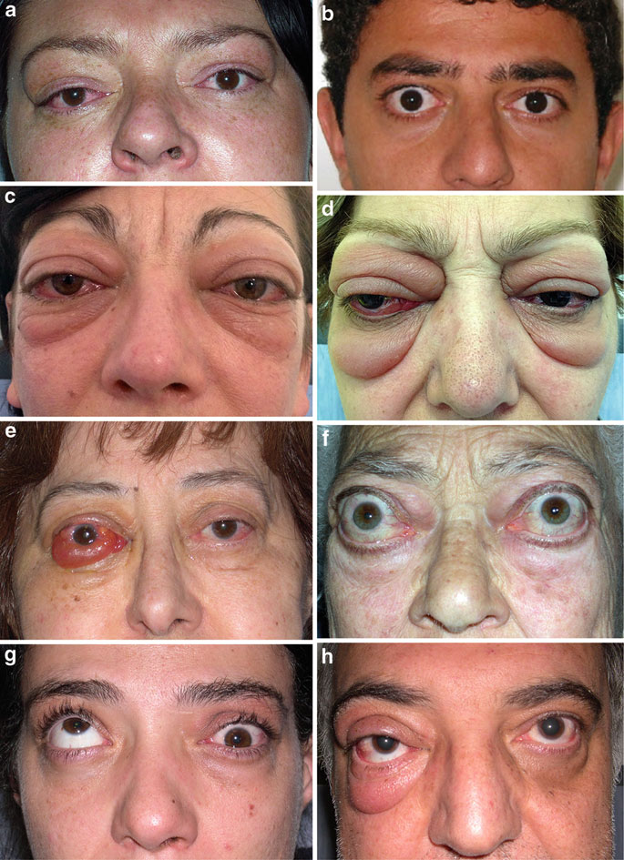

<!DOCTYPE html>
<html lang="en">
<head>
<meta charset="UTF-8">
<meta name="viewport" content="width=device-width, initial-scale=1.0">
<title>Surgical Insight Hub — Graves´ Ophthalmopathy Monograph</title>
<link href="https://fonts.googleapis.com/css2?family=Playfair+Display:wght@400;600;700&family=Source+Serif+4:ital,opsz,wght@0,8..60,300;0,8..60,400;0,8..60,600;1,8..60,300;1,8..60,400&family=JetBrains+Mono:wght@400;500&display=swap" rel="stylesheet">
<link rel="stylesheet" href="../../css/theme.css?v=4.0.0">
<link rel="stylesheet" href="../../css/shared.css">
<script>
  const savedTheme = localStorage.getItem('sih-theme') || 'light';
  if (savedTheme === 'dark') document.documentElement.setAttribute('data-theme', 'dark');
</script>
<style>
:root {
  --primary:   #4C1D95; 
  --primary-dk:#2E1065;
  --primary-lt:#F5F3FF;
  --accent:    #7C3AED;
  --accent2:   #E11D48;
  --gold:      #D97706;
  --gold-lt:   #FEF3C7;
  --red:       #E11D48;
  --red-lt:    #FFF1F2;
  --bg:        #FAFAFA;
  --bg2:       #F4F4F5;
  --border:    #E5E7EB;
  --text:      #0F172A;
  --muted:     #64748B;
  --white:     #FFFFFF;
  --sidebar-w: 320px;
}
[data-theme="dark"] {
  --bg: #0A0702;
  --bg2: #140E05;
  --text: #F3F4F6;
  --muted: #A3A3A3;
  --border: rgba(255,255,255,0.08);
  --primary-lt: #2E1065;
  --white: #140E05;
}
*,*::before,*::after{box-sizing:border-box;margin:0;padding:0;}
html{scroll-behavior:smooth;}
body{font-family:'Source Serif 4',Georgia,serif;background:var(--bg);color:var(--text);font-size:16px;line-height:1.75;}

#sidebar {
  position: fixed; top: 0; left: 0; width: var(--sidebar-w); height: 100vh;
  background: var(--primary-dk); color: #F5F3FF;
  display: flex; flex-direction: column;
  z-index: 1000; overflow: hidden;
  transform: translateX(-100%);
  transition: transform 0.3s cubic-bezier(0.4, 0, 0.2, 1);
  box-shadow: 4px 0 24px rgba(0,0,0,0.4);
}
body.sidebar-open #sidebar { transform: translateX(0); }

#sidebar-overlay {
  position: fixed; top: 0; left: 0; width: 100vw; height: 100vh;
  background: rgba(46, 16, 101, 0.7); backdrop-filter: blur(3px);
  z-index: 950; opacity: 0; pointer-events: none; transition: opacity 0.3s ease;
}
body.sidebar-open #sidebar-overlay { opacity: 1; pointer-events: auto; }

#sidebar-toggle {
  position: fixed; top: 72px; left: 24px; z-index: 900;
  background: var(--primary); color: white;
  border: none; border-radius: 30px;
  padding: 10px 18px; font-family: 'JetBrains Mono', monospace; font-size: 13px; font-weight: 600;
  letter-spacing: 0.05em; cursor: pointer; box-shadow: 0 4px 12px rgba(0,0,0,0.25);
  display: flex; align-items: center; gap: 8px; transition: all 0.2s;
}
#sidebar-toggle:hover { background: var(--accent2); transform: translateY(-2px); }

#sidebar-header{padding:20px 20px 14px;border-bottom:1px solid rgba(255,255,255,0.08);flex-shrink:0;}
#sidebar-header .logo{font-family:'Playfair Display',serif;font-size:13px;font-weight:700;color:var(--accent2);letter-spacing:0.08em;text-transform:uppercase;margin-bottom:4px;}
#sidebar-header .sub{font-size:10.5px;color:rgba(245,243,255,0.6);letter-spacing:0.04em;}
#sidebar-search{padding:10px 14px;border-bottom:1px solid rgba(255,255,255,0.05);flex-shrink:0;}
#sidebar-search input{width:100%;background:rgba(255,255,255,0.05);border:1px solid rgba(255,255,255,0.1);border-radius:6px;color:#F5F3FF;padding:6px 10px;font-size:12px;font-family:'Source Serif 4',serif;outline:none;transition:border-color 0.2s;}
#sidebar-search input::placeholder{color:rgba(245,243,255,0.4);}
#sidebar-search input:focus{border-color:var(--accent2);}
#sidebar-nav{flex:1;overflow-y:auto;padding:8px 0 20px;}
#sidebar-nav::-webkit-scrollbar{width:4px;}
#sidebar-nav::-webkit-scrollbar-thumb{background:rgba(255,255,255,0.15);border-radius:2px;}
.vol-label{font-size:9.5px;font-weight:600;letter-spacing:0.12em;text-transform:uppercase;color:var(--accent2);padding:14px 18px 4px;}
.nav-item{display:block;padding:8px 18px 8px 22px;font-size:12.5px;color:rgba(245,243,255,0.8);text-decoration:none;border-left:2px solid transparent;transition:all 0.15s;line-height:1.4;}
.nav-item:hover{color:#fff;background:rgba(255,255,255,0.03);border-left-color:rgba(225,29,72,0.5);}
.nav-item.active{color:#fff;background:rgba(255,255,255,0.06);border-left-color:var(--accent2);font-weight:600;}
.nav-item .num{font-family:'JetBrains Mono',monospace;font-size:10px;color:rgba(245,243,255,0.4);margin-right:6px;}

#main{margin-left:0; min-height:100vh;}
#hero{background:linear-gradient(135deg,var(--primary-dk) 0%,#4C1D95 60%,#2E1065 100%);color:white;padding:120px 72px 60px;position:relative;overflow:hidden;}
#hero::before{content:'';position:absolute;top:-60px;right:-60px;width:380px;height:380px;background:radial-gradient(circle,rgba(225,29,72,0.15) 0%,transparent 70%);pointer-events:none;}
#hero::after{content:'';position:absolute;bottom:0;left:0;right:0;height:3px;background:linear-gradient(90deg,var(--accent2),var(--gold),transparent);}
#hero .eyebrow{font-family:'JetBrains Mono',monospace;font-size:11px;letter-spacing:0.16em;color:var(--accent2);text-transform:uppercase;margin-bottom:14px;}
#hero h1{font-family:'Playfair Display',serif;font-size:42px;font-weight:700;line-height:1.15;margin-bottom:10px;color:#fff;}
#hero .subtitle{font-size:18px;color:rgba(255,255,255,0.8);font-style:italic;margin-bottom:28px;}
#hero .badges{display:flex;gap:10px;flex-wrap:wrap;}
#hero .badge{background:rgba(255,255,255,0.1);border:1px solid rgba(255,255,255,0.2);border-radius:20px;padding:4px 14px;font-size:12px;color:rgba(255,255,255,0.95);font-family:'JetBrains Mono',monospace;}

.content-wrap{max-width:900px;margin:0 auto;padding:40px 48px 80px;}

.callout{margin:18px 0;padding:14px 18px;border-radius:0 8px 8px 0;border-left:4px solid;font-size:14px;line-height:1.65;}
.callout .label{font-family:'JetBrains Mono',monospace;font-size:10px;font-weight:600;letter-spacing:0.12em;text-transform:uppercase;display:block;margin-bottom:4px;}
.callout.pearl{background:var(--gold-lt);border-color:var(--gold);color:var(--text);}
.callout.pearl .label{color:var(--gold);}
.callout.warn{background:var(--red-lt);border-color:var(--red);color:var(--text);}
.callout.warn .label{color:var(--red);}

@media(max-width:900px) {
  .content-wrap { padding: 20px 20px 60px; }
  #hero { padding: 80px 20px 40px; }
  #hero h1 { font-size: 30px; }
  #sidebar-toggle { top: 64px; left: 16px; }
}
</style>
<link rel="icon" type="image/png" href="../../assets/images/Surgical_Insight_Hub_Logo.png">
</head>
<body>

<nav class="nav" id="mainNav">
  <div class="nav-left">
    <a href="../../index.html" class="nav-pill">
      <div class="nav-logo-img">
        
      </div>
      <div>
        <div class="nav-brand-text">Surgical Insight Hub</div>
        <div class="nav-brand-sub">The Residency Journal</div>
      </div>
    </a>
  </div>
  <div class="nav-links-pill">
    <a href="../../index.html">Home</a>
    <a href="../../notes.html" class="active">Notes</a>
    <a href="../operative_approach.html">Playbook</a>
    <a href="../../arena.html?v=4.0.0">MCQ Arena</a>
    <a href="../../podcast.html">Podcast</a>
    <a href="../../surgery-talk.html">Surgery Talk</a>
    <a href="../../about.html">About</a>
  </div>
  <div class="nav-right">
    <button class="theme-toggle" id="themeToggle" aria-label="Toggle Theme">
      <svg id="moonIcon" viewBox="0 0 24 24" width="18" height="18"><path d="M21 12.79A9 9 0 1 1 11.21 3 7 7 0 0 0 21 12.79z"></path></svg>
      <svg id="sunIcon" style="display:none;" viewBox="0 0 24 24" width="18" height="18"><circle cx="12" cy="12" r="5"></circle><line x1="12" y1="1" x2="12" y2="3"></line><line x1="12" y1="21" x2="12" y2="23"></line><line x1="4.22" y1="4.22" x2="5.64" y2="5.64"></line><line x1="18.36" y1="18.36" x2="19.78" y2="19.78"></line><line x1="1" y1="12" x2="3" y2="12"></line><line x1="21" y1="12" x2="23" y2="12"></line><line x1="4.22" y1="19.78" x2="5.64" y2="18.36"></line><line x1="18.36" y1="5.64" x2="19.78" y2="4.22"></line></svg>
    </button>
    <a href="https://t.me/sugicalInsightHub" target="_blank" class="nav-tg-btn" title="Join Telegram">
      <svg width="18" height="18" viewBox="0 0 24 24" fill="#f0d080"><path d="M12 0C5.37 0 0 5.37 0 12s5.37 12 12 12 12-5.37 12-12S18.63 0 12 0zm5.89 8.22l-1.97 9.28c-.15.66-.54.82-1.08.51l-3-2.21-1.45 1.39c-.16.16-.3.3-.61.3l.21-3.05 5.56-5.02c.24-.21-.05-.33-.37-.12l-6.87 4.33-2.96-.92c-.64-.2-.66-.64.14-.95l11.57-4.46c.54-.19 1.01.13.83.94z"/></svg>
    </a>
    <a href="../../arena.html?v=4.0.0" class="nav-btn arena-btn">MCQ Arena</a>
  </div>
</nav>

<div class="mob-nav-overlay" id="mobNavOverlay" onclick="closeMobNav()"></div>
<div class="mob-nav-sheet" id="mobNavSheet">
  <div class="mob-nav-handle"></div>
  <a href="../../index.html" onclick="closeMobNav()">Home</a>
  <a href="../../notes.html" onclick="closeMobNav()">Notes</a>
  <a href="../operative_approach.html" onclick="closeMobNav()">Playbook</a>
  <a href="../../podcast.html" onclick="closeMobNav()">Podcast</a>
  <a href="../../surgery-talk.html" onclick="closeMobNav()">Surgery Talk</a>
  <a href="../../arena.html" onclick="closeMobNav()">MCQ Arena</a>
  <a href="../../about.html" onclick="closeMobNav()">About</a>
  <a href="https://t.me/sugicalInsightHub" target="_blank" rel="noopener" onclick="closeMobNav()" style="color: var(--brand-gold); font-weight: 800;">Join Telegram Community</a>
</div>

<button id="sidebar-toggle" onclick="toggleSidebar()">
  <span>📜</span> Chapter Navigation
</button>
<div id="sidebar-overlay" onclick="closeSidebar()"></div>

<aside id="sidebar">
  <div id="sidebar-header">
    <div class="logo">Surgical Insight Hub</div>
    <div class="sub">Thyroid Dx Textbook Series</div>
  </div>
  <div id="sidebar-search">
    <input type="text" placeholder="Search chapters..." oninput="filterNav(this.value)">
  </div>
  <nav id="sidebar-nav">
    <div class="vol-label">All 25 Endocrine Chapters</div>
    <a class="nav-item" href="endocrine_ch01_regulation_of_thyroid_function.html"><span class="num">Ch 1</span>Regulation of Thyroid Function, Synthesis, and Function of Thyroid Hormones</a>
<a class="nav-item" href="endocrine_ch02_tests_of_thyroid_function.html"><span class="num">Ch 2</span>Tests of Thyroid Function</a>
<a class="nav-item" href="endocrine_ch03_thyroid_autoantibodies.html"><span class="num">Ch 3</span>Thyroid Autoantibodies</a>
<a class="nav-item" href="endocrine_ch04_nonisotopic_thyroid_imaging.html"><span class="num">Ch 4</span>Nonisotopic Thyroid Imaging</a>
<a class="nav-item" href="endocrine_ch05_nontoxic_goiter.html"><span class="num">Ch 5</span>Nontoxic Goiter</a>
<a class="nav-item" href="endocrine_ch06_thyroid_nodule.html"><span class="num">Ch 6</span>Thyroid Nodule</a>
<a class="nav-item" href="endocrine_ch07_hashimoto_s_thyroiditis.html"><span class="num">Ch 7</span>Hashimoto´s Thyroiditis</a>
<a class="nav-item" href="endocrine_ch08_postpartum_thyroiditis_and_sil.html"><span class="num">Ch 8</span>Postpartum Thyroiditis and Silent Thyroiditis</a>
<a class="nav-item" href="endocrine_ch09_acute_and_subacute_thyroiditis.html"><span class="num">Ch 9</span>Acute and Subacute Thyroiditis</a>
<a class="nav-item" href="endocrine_ch10_classification_and_etiopathoge.html"><span class="num">Ch 10</span>Classification and Etiopathogenesis of Hypothyroidism</a>
<a class="nav-item" href="endocrine_ch11_congenital_hypothyroidism.html"><span class="num">Ch 11</span>Congenital Hypothyroidism</a>
<a class="nav-item" href="endocrine_ch12_central_hypothyroidism.html"><span class="num">Ch 12</span>Central Hypothyroidism</a>
<a class="nav-item" href="endocrine_ch13_diagnosis_and_treatment_of_hyp.html"><span class="num">Ch 13</span>Diagnosis and Treatment of Hypothyroidism</a>
<a class="nav-item" href="endocrine_ch14_graves_disease.html"><span class="num">Ch 14</span>Graves´ Disease</a>
<a class="nav-item active" href="endocrine_ch15_graves_ophthalmopathy.html"><span class="num">Ch 15</span>Graves´ Ophthalmopathy</a>
<a class="nav-item" href="endocrine_ch16_treatment_of_graves_disease.html"><span class="num">Ch 16</span>Treatment of Graves´ Disease</a>
<a class="nav-item" href="endocrine_ch17_toxic_adenoma_and_multinodular.html"><span class="num">Ch 17</span>Toxic Adenoma and Multinodular Toxic Goiter</a>
<a class="nav-item" href="endocrine_ch18_pathogenesis_of_thyroid_carcin.html"><span class="num">Ch 18</span>Pathogenesis of Thyroid Carcinoma</a>
<a class="nav-item" href="endocrine_ch19_differentiated_thyroid_carcino.html"><span class="num">Ch 19</span>Differentiated Thyroid Carcinoma of Follicular Origin</a>
<a class="nav-item" href="endocrine_ch20_medullary_carcinoma.html"><span class="num">Ch 20</span>Medullary Carcinoma</a>
<a class="nav-item" href="endocrine_ch21_anaplastic_and_other_forms_of_.html"><span class="num">Ch 21</span>Anaplastic and Other Forms of Thyroid Carcinoma</a>
<a class="nav-item" href="endocrine_ch22_new_medical_treatment_for_thyr.html"><span class="num">Ch 22</span>New (Medical) Treatment for Thyroid Carcinoma</a>
<a class="nav-item" href="endocrine_ch23_thyroid_physiology_and_thyroid.html"><span class="num">Ch 23</span>Thyroid Physiology and Thyroid Diseases in Pregnancy</a>
<a class="nav-item" href="endocrine_ch24_non_thyroidal_illness.html"><span class="num">Ch 24</span>Non-thyroidal Illness</a>
<a class="nav-item" href="endocrine_ch25_drugs_and_other_substances_int.html"><span class="num">Ch 25</span>Drugs and Other Substances Interfering with Thyroid Function</a>

  </nav>
</aside>

<main id="main">
<header id="hero">
  <div class="eyebrow">Endocrine Surgery · Chapter 15</div>
  <h1>Graves´ Ophthalmopathy</h1>
  <p class="subtitle">Structured Surgical Monograph formatted with fluid prose, inline textbook diagnostic plates, and clinical guidance.</p>
  <div class="badges">
    <span class="badge">Chapter 15</span>
    <span class="badge">Inline Plates</span>
    <span class="badge">Thyroid Dx PDF</span>
  </div>
</header>

<div class="content-wrap">
  <section class="topic">
    
    <div class="callout pearl" style="margin-bottom:28px;">
      <span class="label">🎓 TEXTBOOK MONOGRAPH — THYROID DX</span>
      Full surgical monograph extracted directly from <strong>Thyroid Pathology and Laboratory Diagnostics</strong> (Chapter 15: Graves´ Ophthalmopathy). Features complete text, formatted clinical guidance, and inline textbook figures.
    </div>
<ul style="margin:12px 0 20px 20px;">
<li style="margin-bottom:8px; line-height:1.65;"><strong>Graves’ Ophthalmopathy Claudio</strong> Marcocci and Terry J. Smith Contents</li>
</ul>
<h3 style="font-family:'Playfair Display',serif; font-size:20px; color:var(--primary); margin:32px 0 14px; border-bottom:1px solid var(--border); padding-bottom:6px;">Introduction ......................................................................................</h3>

                <div style="display:flex; gap:16px; margin:20px 0; padding:16px; border-radius:14px; border:1px solid var(--border); background:var(--bg2); align-items:center;">
                  <div style="width:180px; min-width:180px; height:140px; border-radius:10px; overflow:hidden; border:1px solid var(--border); background:#fff; display:flex; align-items:center; justify-content:center; padding:6px; flex-shrink:0;">
                    
                  </div>
                  <div style="flex:1;">
                    <div style="font-family:'JetBrains Mono',monospace; font-size:11px; font-weight:700; color:var(--accent2); text-transform:uppercase; margin-bottom:6px;">Textbook Illustration &amp; Diagnostic Plate</div>
                    <div style="font-size:13.5px; color:var(--muted); line-height:1.5;">High-resolution diagnostic plate illustrating introduction ...................................................................................... in Chapter 15.</div>
                  </div>
                </div>
<h3 style="font-family:'Playfair Display',serif; font-size:20px; color:var(--primary); margin:32px 0 14px; border-bottom:1px solid var(--border); padding-bottom:6px;">Pathogenesis .....................................................................................</h3>

                <div style="display:flex; gap:16px; margin:20px 0; padding:16px; border-radius:14px; border:1px solid var(--border); background:var(--bg2); align-items:center;">
                  <div style="width:180px; min-width:180px; height:140px; border-radius:10px; overflow:hidden; border:1px solid var(--border); background:#fff; display:flex; align-items:center; justify-content:center; padding:6px; flex-shrink:0;">
                    
                  </div>
                  <div style="flex:1;">
                    <div style="font-family:'JetBrains Mono',monospace; font-size:11px; font-weight:700; color:var(--accent2); text-transform:uppercase; margin-bottom:6px;">Textbook Illustration &amp; Diagnostic Plate</div>
                    <div style="font-size:13.5px; color:var(--muted); line-height:1.5;">High-resolution diagnostic plate illustrating pathogenesis ..................................................................................... in Chapter 15.</div>
                  </div>
                </div>
<p style="font-size:16px; line-height:1.75; margin-bottom:16px; color:var(--text);">Factors Conveying Disease Risk ............................................................ Role of Orbital Fibroblasts in GO ........................................................... Orbital Fibroblast Heterogeneity and Recognition of Fibrocyte Involvement ............. Cytokines and GO ........................................................................... Lymphocytes and the Development of GO ................................................. Expression of TSHR in the Orbit ............................................................ Implicating Other Antigens as Potentially Participating in GO ............................ Pathological Features of GO .................................................................... General, Anatomical, and Functional Aspects of Orbital Pathology ....................... Ocular Surface and Tear Film Abnormalities in GO ........................................</p>
<h3 style="font-family:'Playfair Display',serif; font-size:20px; color:var(--primary); margin:32px 0 14px; border-bottom:1px solid var(--border); padding-bottom:6px;">Epidemiology ....................................................................................</h3>

                <div style="display:flex; gap:16px; margin:20px 0; padding:16px; border-radius:14px; border:1px solid var(--border); background:var(--bg2); align-items:center;">
                  <div style="width:180px; min-width:180px; height:140px; border-radius:10px; overflow:hidden; border:1px solid var(--border); background:#fff; display:flex; align-items:center; justify-content:center; padding:6px; flex-shrink:0;">
                    
                  </div>
                  <div style="flex:1;">
                    <div style="font-family:'JetBrains Mono',monospace; font-size:11px; font-weight:700; color:var(--accent2); text-transform:uppercase; margin-bottom:6px;">Textbook Illustration &amp; Diagnostic Plate</div>
                    <div style="font-size:13.5px; color:var(--muted); line-height:1.5;">High-resolution diagnostic plate illustrating epidemiology .................................................................................... in Chapter 15.</div>
                  </div>
                </div>
<ul style="margin:12px 0 20px 20px;">
<li style="margin-bottom:8px; line-height:1.65;">Clinical Presentation .............................................................................</li>
</ul>
<p style="font-size:16px; line-height:1.75; margin-bottom:16px; color:var(--text);">Symptoms .................................................................................... Signs ......................................................................................... Patient Evaluation ............................................................................ Natural History ..................................................................................</p>
<h3 style="font-family:'Playfair Display',serif; font-size:20px; color:var(--primary); margin:32px 0 14px; border-bottom:1px solid var(--border); padding-bottom:6px;">Treatment ........................................................................................</h3>

                <div style="display:flex; gap:16px; margin:20px 0; padding:16px; border-radius:14px; border:1px solid var(--border); background:var(--bg2); align-items:center;">
                  <div style="width:180px; min-width:180px; height:140px; border-radius:10px; overflow:hidden; border:1px solid var(--border); background:#fff; display:flex; align-items:center; justify-content:center; padding:6px; flex-shrink:0;">
                    
                  </div>
                  <div style="flex:1;">
                    <div style="font-family:'JetBrains Mono',monospace; font-size:11px; font-weight:700; color:var(--accent2); text-transform:uppercase; margin-bottom:6px;">Textbook Illustration &amp; Diagnostic Plate</div>
                    <div style="font-size:13.5px; color:var(--muted); line-height:1.5;">High-resolution diagnostic plate illustrating treatment ........................................................................................ in Chapter 15.</div>
                  </div>
                </div>
<ul style="margin:12px 0 20px 20px;">
<li style="margin-bottom:8px; line-height:1.65;"><strong>Choice of Thyroid</strong> Treatment ................................................................</li>
</ul>
<h3 style="font-family:'Playfair Display',serif; font-size:20px; color:var(--primary); margin:32px 0 14px; border-bottom:1px solid var(--border); padding-bottom:6px;">Treatment Options for GO ...................................................................</h3>
<p style="font-size:16px; line-height:1.75; margin-bottom:16px; color:var(--text);">Surgical Approaches to Therapy ............................................................ Unmet Needs of the Patient with GO ...........................................................</p>
<h3 style="font-family:'Playfair Display',serif; font-size:20px; color:var(--primary); margin:32px 0 14px; border-bottom:1px solid var(--border); padding-bottom:6px;">References .......................................................................................</h3>
<p style="font-size:16px; line-height:1.75; margin-bottom:16px; color:var(--text);">C. Marcocci Department of Clinical and Experimental Medicine, University of Pisa, Pisa, Italy e-mail: claudio.marcocci@med.unipi.it T. J. Smith (*) Department of Ophthalmology and Visual Sciences Kellogg Eye Center and Division of Metabolism, Endocrinology, and Diabetes, Department of Internal Medicine, University of Michigan Medical School, Ann Arbor, MI, USA e-mail: terrysmi@umich.edu # Springer International Publishing AG, part of Springer Nature 2018 P. Vitti, L. Hegedüs (eds.), Thyroid Diseases, Endocrinology, Abstract Thyroid-associated ophthalmopathy aka Graves’ orbitopathy (GO), represents the periocular component of Graves’ disease (GD), for which safe and effective therapies remain elusive. The central pathogenic event in GD is loss of immune tolerance to the thyrotropin receptor (TSHR) and generation of activating anti- TSHR antibodies. Recent evidence suggests that TSHR might collaborate with other proteins, such as the insulin-like growth factor-I receptor in the pathogen- esis of GO. In this chapter we have attempted to review the most most recent insights into disease mechanisms underlying GO, strategies for evaluating patients, and currently available therapeutic strategies and those remedies that are in development. Keywords Ophthalmopathy · Autoimmune · Inflammation Abbreviations AKT Protein kinase B Arg Arginine CAS</p>
<ul style="margin:12px 0 20px 20px;">
<li style="margin-bottom:8px; line-height:1.65;">Clinical activity score</li>
</ul>
<p style="font-size:16px; line-height:1.75; margin-bottom:16px; color:var(--text);">CD Cluster of differentiation CTLA-4 Cytotoxic T-lymphocyte-associated protein 4, also known as CD152 DON Dysthyroid optic neuropathy FRAP FK506-binding protein 12-rapamycin-associated protein GD Graves’ disease GO Graves’ orbitopathy, also known as thyroid-associated ophthalmopathy HA Hyaluronan HLA-DRβ Human leukocyte antigen DRβ IGF-IR Insulin-like growth factor-I receptor IL Interleukin mTOR Mechanistic target of rapamycin OR Orbital radiotherapy PGE2 Prostaglandin E2 PGHS-2 Prostaglandin endoperoxide H synthase-2 PTPN22 Protein tyrosine phosphatase, non-receptor type 22 QoL Quality of life RANTES Regulated on activation, normal T cell expressed and secreted TGF-beta Transforming growth factor beta THYPRO Thyroid patient reported outcome TNF Tumor necrosis factor TSHR Ab Thyrotropin receptor antibodies TSHR Thyrotropin receptor TSI Stimulating TSHR Ab UDP Uridine diphosphate C. Marcocci and T. J. Smith</p>
<h3 style="font-family:'Playfair Display',serif; font-size:20px; color:var(--primary); margin:32px 0 14px; border-bottom:1px solid var(--border); padding-bottom:6px;">Introduction</h3>
<p style="font-size:16px; line-height:1.75; margin-bottom:16px; color:var(--text);">Thyroid-associated ophthalmopathy aka Graves’ orbitopathy (GO), a disfiguring and potentially sight-threatening condition, is the periocular component of Graves’ disease (GD) (Smith and Hegedüs 2016; Wang and Smith 2014). It remains a vexing condition for which limited therapies proven to beeffective and safe currently exist. It represents the most common and serious extra-thyroidal manifestation of the autoimmunity connected to GD. GO was first described in the late nineteenth century and is recognized as most likely resulting from the systemic autoimmune process also underlying the thyroid involvement in GD. It affects not only the orbital contents but also the upper face. Tying together these anatomically dispersed manifestations of GD has proven to be challenging. Only in the past few years have coherent theoretical models of the disease been proposed. At the heart of GD is the loss of immune tolerance to the thyrotropin receptor (TSHR) against which activating antibodies (TSHR Ab) are directed (Rapoport and McLachlan 2016). It is precisely the activities of these stimulating TSHR Ab (TSI) that account for the thyroid growth and hyperthyroidism that frequently lead to the initial diagnosis of GD. The molecular events surrounding TSHR expression, mutations, processing, activation, and downstream signaling in thyroid epithelial cells have been well described (Kleinau et al. 2016; Vassart and Kleinau 2014). But a relatively recent awareness that TSHR expression is not limited to the thyroid and is expressed widely in many tissues, has led to identification of an increasingly diverse role for the receptor in health and disease. Extra-thyroidal levels of TSHR are considerably lower than those in thyroid epithelium, but the protein appears to be functional (Tsui et al. 2008). Its activation initiates signaling through both canonical and untraditional pathways. It stands to reason that a shared antigen such as TSHR might explain, at least in part, the manifestation of GD in thyroid and orbit, two tissues with embryological dissimilarities and anatomical separation. But TSIs cannot be detected in a small proportion of individuals developing GD and manifesting GO. While the issue of assay detection limits might account for these cases, it remains possible that other antigens could also play roles in GO. Absence of animal and in vitro experimental models with high-degree fidelity to the human disease has posed significant barriers to solving GD. Thus, signif- icant gaps in our understanding of GO remain. This in turn has resulted in inadequate specific and safe therapeutic options. In this chapter, we have attempted to provide an overview of the currently held concepts of GO pathogenesis, describe the pathological and clinical features of the disease and strategies for its diagnosis. We also, summarize medical and surgical therapies currently available. Finally we examine the prospects for additional treatments for GO that should improve the lives of patients with this disease.</p>
<h3 style="font-family:'Playfair Display',serif; font-size:20px; color:var(--primary); margin:32px 0 14px; border-bottom:1px solid var(--border); padding-bottom:6px;">Pathogenesis</h3>
<p style="font-size:16px; line-height:1.75; margin-bottom:16px; color:var(--text);">Details concerning the mechanisms underlying GO are now becoming clearer. Investigative strategies developed while studying closely related diseases, including those with autoimmune bases and involving connective tissue remodeling, have been applied to the orbit in GD. Graves’ Ophthalmopathy Factors Conveying Disease Risk The factors initiating GD and GO remain uncertain. The orbital disease appears to be autoimmune in nature rather than the consequence of abnormalities of thyroid function per se. GO is presumed to occur in genetically susceptible individuals who are exposed to an as yet unidentified environmental factor and then manifest the clinical disease. It is unclear whether individuals with GD who do not manifest GO are genetically or immunologically distinct from those with ocular involvement. In fact, to our knowledge, no compelling evidence has thus far been advanced that the genetic or molecular underpinnings of GD vary in those without and with clinically apparent GO. Many workers in the field contend that virtually all individuals with bona fide GD manifest at least minimal alterations in the orbit and upper face. These might be limited to dry eye symptoms or minimal eyelid retraction. Changes in several genes conveying susceptibility to GD have been identified, including polymorphisms of the TSH receptor, thyroglobulin, CTLA-4, CD25, HLA-DRβ-Arg74, PTPN22, and CD40 (Tomer 2014). Limited evidence also supports a role for epigenetic factors in disease initiation and promotion. Several genes are hyper-methylated, notably TSHR and those encoding key signaling proteins in T cells (Limbach et al. 2016). Triggering of GO, like that of GD, in many cases can be linked to distinct antecedent episodes of emotional (examples include death of loved ones, incarceration, loss of a job) and physical stress (myocardial infarction, major surgery, severe infections, motor auto- mobile accidents). Despite the common threads connecting the onset of hyperthyroid- ism and ocular processes, the initial manifestations of the two can be simultaneous or separated by many years. Dietary iodine intake and exposure to tobacco smoke are thought to represent important determinants of risk. Of particular note is the remark- able incidence of GD among individuals undergoing treatment with the CD52- targeting drug, alemtuzumab (aka Campath), in the context of multiple sclerosis or chronic lymphocytic leukemia (Coles et al. 1999). Clearly a vast array of intersecting factors emerge as important candidates for provoking the development of GO (Effraimidis and Wiersinga 2014). This panoply has made the task of piecing together the initiating factors in this disease extremely challenging. Role of Orbital Fibroblasts in GO A key cellular participant in the pathogenesis of GO is the orbital fibroblast (Fig. 1) (Smith et al. 1995). It is widely but not universally accepted that these cells, rather than extraocular muscle cells, represent the dominant target for the autoimmunity occurring within the orbit in GO. These fibroblasts exhibit unique characteristics that set them apart from similar cells in other anatomic regions. Further, fibroblasts derived from connective tissue in GO diverge from those inhabiting the healthy, unaffected orbit (Young et al. 1998; Smith et al. 1994). Unlike certain fibroblast types which serve primarily structural roles, subsets of orbital fibroblasts exhibit a complex set of phenotypic attributes that suggest important roles in host defense and immune surveillance. Among the distinguishing characteristics of these cells are C. Marcocci and T. J. Smith Fig. 1 Theoretical model of the pathogenesis of GO. The orbit becomes infiltrated by B and T cells and CD34+ fibrocytes. The bone marrow-derived fibrocytes differentiate into CD34+ fibroblasts which in turn can further differentiate into myofibroblasts or adipocytes. CD34+ fibroblasts cohabit the orbit with residential CD34 fibroblasts. These cells produce several different cytokines. Their expression repertoire depends on the environment that the fibroblasts are subjected to, including the array of lymphocytes, mast cells, and macrophages that are recruited to the orbit. Interleukins 1β, 6, 8, and 16, tumor necrosis factor-α, regulated on activation, normal T expressed and secreted (RANTES), and CD40 ligand (CD154) appear to play integral roles in promoting inflammation and tissue remodeling. CD34+ fibroblasts, putatively derived from circulating fibrocytes, express thyroglobulin, thyroperoxidase, sodium iodide symporter, and TSHR. These are expressed because CD34+ orbital fibroblasts and fibrocytes express autoimmune regulator protein. Immunoglobulins activate the thyrotropin/insulin-like growth factor receptor-1 complex and in so doing induce expression of several inflammatory molecules. They also express the molecular machinery that produces hyaluronan and other abundant glycosaminoglycans. These are extremely hydrophilic and voluminous and tend to expand the tissues in which they accumulate. They are thought to promote expansion of orbital tissue volume in GO, causing anterior displacement of the globe and compres- sion of the optic nerve. Orbital fat expansion also results from de novo adipogenesis Graves’ Ophthalmopathy their remarkably robust responses to inflammatory cytokines such as IL-1β, CD40 ligand (CD154), leukoregulin, insulin-like growth factor-I (IGF-I), and platelet-derived growth factor (Cao et al. 1998; van Steensel et al. 2012; Han et al. 2002). Cognate receptors for most of these factors have been detected on the fibroblast surface, and their functions have been at least partially characterized. Further, these cells utilize a diverse set of signaling pathways downstream from cell-surface-displayed cytokine and growth factor receptors. A number of target genes and their products are dramatically upregulated in orbital fibroblasts by cytokines and growth factors and thus account in part for the pathological changes occurring in the disease. Among these target genes, the inflammatory cyclooxygenase, prostaglandin endoperoxide H synthase-2 (PGHS-2) and the terminal enzyme, microsomal prostaglandin E2 syn- thase, are especially responsive to many of these stimuli, accounting for an exag- gerated generation of PGE2 (Young et al. 1998; Smith et al. 1994; Cao et al. 1998; van Steensel et al. 2012; Han et al. 2002). Orbital fibroblasts themselves are important sources of several key cytokines involved in the genesis of GO, including IL-1α, IL-1β, IL-6, RANTES, IL-8, and IL-16 (Pritchard et al. 2003; Sciaky et al. 2000; Li and Smith 2013). Other factors generated by orbital fibroblasts, such as IL-1 receptor antagonist and IL-10, serve as “brakes” that modulate the inflamma- tory processes in which these cells participate (Li and Smith 2013). The expression of genes encoding these and other inflammatory mediators are regulated at both the transcriptional and posttranscriptional levels. Fundamental differences in patterns of transcription factor expression and mRNA stability appear to play important roles in shaping the unique attributes associated with orbital fibroblast phenotypes. Several of the particularly robust inductions demonstrated in cultured orbital fibroblasts coincide with genes that have been found to be upregulated in situ in orbital tissues retrieved from individuals with GO, including PGHS-2 and IL-1β. Orbital Fibroblast Heterogeneity and Recognition of Fibrocyte Involvement GO orbital fibroblasts comprise a heterogeneous population of cells. They can be parsed into discrete subsets based on their expression and display of surface markers such as Thy-1 (Smith et al. 2002) and CD34 (Douglas et al. 2010). These markers are of substantial importance because they provide clues as to the embryonic and ana- tomic origins of these cells and because they also inform about the potential of fibroblasts for terminal differentiation. For instance, Thy-1-displaying cells are par- ticularly responsive to TGF-β and can differentiate under its influence into myofibroblasts playing important roles in fibrosis and wound repair (Smith et al. 2002). Thy-1-negative fibroblasts, on the other hand, differentiate into lipid- accumulating adipocytes when exposed to peroxisome proliferator-activated receptor γ (PPARγ) PPARγ-activating factors. It is currently believed that the adipogenic potential of orbital fibroblast subsets may play a major role in the tissue expansion occurring in GO. Fibroblasts expressing CD34, which can be uniquely identified in the GO orbit, are currently believed to derive from circulating CD34+ fibrocytes (Douglas C. Marcocci and T. J. Smith et al. 2010). These cells are derived from bone marrow and are thought to be of monocyte lineage. They have established roles in the fibrotic changes occurring following tissue injury and are trafficked to sites of wound repair in experimental models of lung fibrosis (Mehred et al. 2007). Circulating fibrocytes are relatively rare in peripheral blood mononuclear cells of healthy individuals. In contrast, they become substantially more abundant in many individuals with GD and especially those with active GO (Douglas et al. 2010). Their definitive identification rests on display of an array of specific cell markers, including collagen I, the chemokine receptor, CXCR4, CD34, and CD45. CD34+ orbital fibroblasts appear to be peculiar to the GO orbit (Douglas et al. 2010). They express relatively high levels of functional TSHR as well as other thyroid-specific antigens including thyroglobulin, sodium iodide symporter, and thyroperoxidase (Fernando et al. 2012, 2014). The expression of these proteins appears to be dependent on the autoimmune regulator protein (AIRE), a nontraditional transcription factor with an established role in thymic education and the depletion of autoreactive T cells. CD34+ orbital fibroblasts coexist in the GO orbit with CD34 fibroblasts which appear to be identical to the fibroblasts uniformly found in the healthy orbit. Recent reports from a single laboratory group suggest that these fibroblasts exert a set of influences on CD34+ orbital fibroblasts that tend to down- regulate the distinctive features of their reactive phenotype (Fernando et al. 2012). Thus it has been postulated that an imbalance between CD34+ and CD34 orbital fibroblasts in favor of the former may lead to particularly aggressive GO. An important attribute of orbital fibroblasts is their capacity to synthesize large amounts of hyaluronan. They express a characteristic profile of hyaluronan synthase isoenzymes and the UDP glucose dehydrogenase gene (Kaback and Smith 1999). These are highly inducible in GO orbital fibroblasts by IL-1β, TSH, IGF-I, and CD40 ligand (Cao et al. 1998; Kaback and Smith 1999; Spicer et al. 1998). In addition, other abundant glycosaminoglycans such as chondroitin sulfate and dermatan sulfate may also accumulate in this disease. It is the extreme hydrophilic nature of these molecules that contributes to the volume expansion associated with GO. Cytokines and GO A wide range of soluble inflammatory mediators have been implicated in the patho- genesis of GO. These include eicosanoids (prostaglandins, thromboxanes, leukotri- enes, lipoxins), mitogenic growth factors (IGF-I, platelet-derived growth factor), and cytokines. None of these factors has been the focus of study in the context of GO more than the medley of cytokines thus far detected in affected orbital fat. The specific cytokines found in a particular case may suggest skew toward a helper T cell paradigm, such as Th1, Th2, or Th17. It would appear that the stage of the orbital disease may represent an important determinant of which T cell subset might play a primary role in the tissue remodeling that occurs during that period. Among those cytokines that have been detected are IL-1α, IL-1β, IL-6, interferon γ, TGF-β, and TNFα (Heufelder and Bahn 1993). Rather than a particular cytokine likely exhibiting primacy in the disease, it seems more likely that the medley of many of these factors, Graves’ Ophthalmopathy changing in relative abundance with disease progression, serves to guide the inflam- matory response followed by the tissue repair processes. Although not focused on in most studies, molecules with regulatory roles that modulate rather than promoting inflammation and tissue reactivity are likely to play important roles in terminating tissue remodeling in the orbit. These include activating ligands of PPAR-γ and members of the cytokine family including IL-1 receptor antagonists and IL-10. Lymphocytes and the Development of GO Immune reactivity occurring in the orbit is thought to be similar or identical to that within the thyroid gland in GD. The adaptive immune system has been convinc- ingly implicated in the development of GD and GO. Both Tand B cells are required and have been identified in the diseased orbit and have been partially characterized although antigen-specific cells have yet to be identified in the GO orbit (Grubeck- Loebenstein et al. 1994; de Carli et al. 1993; Kahaly et al. 2011; Jaume et al. 1994). Included in these cells are those exhibiting effector phenotypes as well as others with regulatory characteristics. It is the balance between these populations of effector and regulatory T and B cells that determines whether immune reactivity will culminate in disease or be suppressed. T cells are required to endorse critical B cell functions such as immunoglobulin class switching. The infiltrating lympho- cytes as well as mast cells and monocyte subsets determine in large part the cytokine milieu in the GO orbit and therefore the pattern of tissue reactivity and remodeling that occurs. Lymphocytes are capable of cross talk with orbital fibro- blasts through molecular portals such as the CD40/CD40 ligand pathway and a variety of cytokines and their cognate receptors. Thus these pathways represent potentially important therapeutic targets. In fact, these have already been exploited in allied autoimmune disease such as rheumatoid arthritis and are being repurposed for the treatment of GO. Expression of TSHR in the Orbit Shortly after its molecular cloning by Parmentier et al. (1989), transcripts encoding TSHR were detected by PCR, albeit at extremely low levels, in orbital fat (Feliciello et al. 1993). This finding and those that followed demonstrated TSHR mRNA expression in fat depots in an anatomically dispersed pattern (Agretti et al. 2002) and suggested the possibility that the receptor might play a role in both normal physiological regulation and in the pathogenesis of GO. Subsequent studies revealed low-level expression by cultured orbital fibroblasts that were fractionally higher in cells derived from patients with the disease than those from healthy donors (Valyasevi et al. 1999). Later studies have revealed that subjecting fibroblasts to culture condi- tions favoring their differentiation into adipocytes increases the expression of TSHR. TSHR expressed by orbital fibroblasts has been shown to be functional since both TSH and TSIs can induce the expression of several gene products in these cells, C. Marcocci and T. J. Smith including pro-inflammatory cytokines such as IL-1 and IL-6 [Li and Smith 2013; Raychaudhuri et al. 2013). Thus, the leading candidate for an antigen shared by the thyroid and orbit appears to be TSHR. This strong possibility is not a certainty since TSHR has been detected in many if not all fatty tissue deposits thus far examined in human beings and in rodents (Agretti et al. 2002; Shimura et al. 1998). Some of these fatty tissues inhabit anatomic regions not obviously manifesting GD. From the evidence thus far generated, it would appear that infiltrating fibrocytes may account for most if not the entire presence of TSHR in the GO orbit. Implicating Other Antigens as Potentially Participating in GO The complexities surrounding the pathogenesis of GO have provoked inquiry into potential roles for antigens other than TSHR in the disease process. Among the initial studies attempting to identify the pathogenic autoantigen(s) in GO were those conducted by Kriss and his associates more than 40 years ago (Kriss 1970). His group reported the detection of thyroglobulin in affected orbital tissues. He postu- lated that the protein traveled to the orbit from the thyroid by retrograde lymphatic flow. More recent findings by Lisi and colleagues (2002) have disclosed that thyroglobulin can bind hyaluronan (HA) produced by orbital fibroblasts in a non- specific manner. Much more recently, IGF-IR has emerged as a potentially attractive antigenic candidate. Its insinuation into the disease dates back to the observations of Weightman et al. (1993) who demonstrated that IgGs from patients with GO could displace radiolabeled IGF-I from surface binding on orbital fibroblasts. Although the studies fell short of identifying IGF-IR as containing the binding site to which the IgGs and IGF-I were competing, they for the first time implicated the IGF-1 pathway in the disease. Subsequently, Pritchard et al. (2003) reported that IGF-1R was overexpressed by orbital fibroblasts from patients with the disease. They also found that IgGs purified from these patients could induce chemokines such as IL-16 and RANTES. These responses were absent in fibroblasts from healthy individuals and were mediated through the FRAP/mTOR/AKT/p70s6kinase pathway and were thus inhibited by rapamycin (Pritchard et al. 2002). Transfecting fibroblasts with a dominant negative IGF-1R could block the induction as could monoclonal blocking antibodies directed at IGF-IR (Pritchard et al. 2003). Pathological Features of GO General, Anatomical, and Functional Aspects of Orbital Pathology The human orbit represents a boney cone-shaped space where multiple structures and soft tissues must function in close proximity. Thus any enlargement of its occupants can easily distort the normal physical relationships existing within the orbit. The orbit is filled with a fatty connective tissue depot which surrounds the Graves’ Ophthalmopathy vascular investments, nerves, extraocular muscles, and globe. Initial presentation of GO is typically dominated by signs of inflammation and local congestion. These are frequently coupled to the symptoms of ocular pain, irritation, and dry eyes. This constellation of signs and symptoms heralds the onset of characteristic tissue remodeling, including the disordered accumulation of the glycosaminoglycan, HA, and the expansion of orbital fat (Smith et al. 1989). HA stands out among similar complex sugars as the most abundant, lacking a core protein, and being non-sulfated. Unlike most related glycosaminoglycan molecules, HA is synthesized at the cell membrane. Its rheological properties, including an enormous Stokes radius and extreme hydrophilic nature, result in a frequently dramatic expansion of the orbital contents as the molecule accumulates. Besides the volume expansion directly resulting from HA accumulation, evidence suggests that accelerated de novo adipogenesis may also occur in GO (Kumar et al. 2004). While the majority of individuals with GO exhibit both expansion of fatty connective tissue and increased muscle volume, the disease can be dominated in certain individuals with either. Whether primarily involving the fat, muscles, or both, swelling of the orbital contents in GO can cause the anterior propulsion of the globe in the process known as proptosis. Further, venous drainage from the orbit can be impaired. The optic nerve can be compromised by crowding of the adjacent tissues and can in extreme cases result in dysthyroid optic neuropathy (DON). Microscopic examination of the orbital tissues reveals accumulation of extracel- lular metachromatic material and prominent cells accumulating triglyceride. Typi- cally the native architecture of the extraocular muscles is spared until very late in the disease process when fibrosis diminishes ocular motility and distorts muscle mor- phology (Hufnagel et al. 1984). This stage of the disease is currently considered irreversible. The enlargement of the muscles is a consequence of intercalating fibroblasts expanding the muscle volume and generating HA and thus increasing the space between intact muscle fibers as a consequence of water accumulation. The changes observed in the muscles can impose restrictions on eye movement, regard- less of whether diplopia is present or not. Further, the increased muscle volume can contribute to crowding of other orbital structures, critically including the optic nerve. Besides the changes observed in the orbital contents, many individuals with GO manifest inflammation of the upper face. These changes can be subtle and limited to mild hyperemia or dramatic with substantial deposition of subcutaneous HA and appreciable swelling. The eyelids can be affected and appear edematous, sometimes disrupting their motility. Abnormalities in eyelid function can result in their dys- function and poor coverage of the globe, leaving the anterior eye surface exposed. Ocular Surface and Tear Film Abnormalities in GO The anterior surface of the eye frequently becomes victimized by the architectural and biochemical abnormalities occurring in GO. These changes can be among the earliest signs of GO and can present as dry eye (Gupta et al. 2009). The anterior surface comprises the cornea, conjunctiva, and margins of the lids. Anterior C. Marcocci and T. J. Smith propulsion of the eye, resulting in proptosis of variable extent, can result in signif- icant lagophthalmos from inadequate eyelid coverage. These surfaces are covered by the protective fluid coating known as tear film. Further, tear composition and quantity in GO change, resulting in inadequate protection of surface epithelium (Boehm et al. 2013). Alterations in tear production may result from the direct actions of TSIs on the acinar cells of the lacrimal gland mediated through the TSHR (Eckstein et al. 2004). Levels of factors involved in surface protection and modula- tion of inflammation, including proline-rich proteins, annexin A1, cavin, and cystatins, are altered in GO (Matheis et al. 2015). On the other hand, inflammatory mediators are more abundant in active GO. In addition, tears evaporate more rapidly in the disease, resulting in increased osmolarity. These factors result in anterior eye surface inflammation which presents clinically as dry eye symptoms, including gritty sensations of foreign bodies, irritation, and eye redness. These symptoms can be among the very earliest found in GO and can dramatically reduce the quality of life in affected patients. Thus, therapy improves but does not fully restore quality of life in GD and GO patients, as measured by a disease-specific quality of life instrument (the ThyPRO) (Cramon et al. 2016). If the condition remains inadequately treated, the integrity of the epithelium is disturbed and can result in infection and irreversible corneal changes affecting visual quality.</p>
<h3 style="font-family:'Playfair Display',serif; font-size:20px; color:var(--primary); margin:32px 0 14px; border-bottom:1px solid var(--border); padding-bottom:6px;">Epidemiology</h3>
<ul style="margin:12px 0 20px 20px;">
<li style="margin-bottom:8px; line-height:1.65;"><strong>Clinical manifestations of</strong> GO are evident in about 40–50% of patients with GD,</li>
</ul>
<p style="font-size:16px; line-height:1.75; margin-bottom:16px; color:var(--text);">even though, using orbital imaging, subclinical evidence of eye involvement can be detected in the large majority (Smith and Hegedüs 2016; Wang and Smith 2014). Moderate-to-severe and very severe GO are observed in about 5% of cases of GD. GO usually occurs simultaneously with the onset of hyperthyroidism but these usual appears within 18 months of each other. In a very few cases, GO can precede or follow hyperthyroidism by many years (Smith and Hegedüs 2016; Menconi et al. 2014a). Rarely GO may occur in patients with autoimmune thyroiditis without or with hypothyroidism (euthyroid/hypothyroid GO). The incidence of GO in a population-based study in Olmsted County, MN, United States, was 16.0/100,000 persons/year for women and 2.9/100,000 person/year for men (Bartley et al. 1995), The majority of patients manifested mild GO. More recent studies in Europe show lower incidence rates. In Sweden the incidence of GO was 4.2/100,000 person/year, and about one fifth of the patients exhibited infiltrative signs (Abraham-Nordling et al. 2011). In Denmark, the incidence of moderate-to- severe GO was 1.6/100,000 person/year, with a rate of 2.7/100,000 person/year in women and 0.5/100,000 person/year in men (Laurberg et al. 2012). That study revealed a peak incidence between 40 and 60 years of age. The incidence of GO is relatively lower in patients younger than 40 years. Most studies show a greater prevalence in females than in males, with a relative predominance of more severe cases in males. Graves’ Ophthalmopathy Radioiodine therapy and, particularly, cigarette smoking are well-recognized risk factors for de novo development or deterioration of GO (Bartalena 2012), particu- larly in patients with hyperthyroidism of recent onset (Traisk et al. 2009). The risk associated with radioiodine administration is further increased in smokers and in patients with severe hyperthyroidism. The harmful effect of radioiodine is substan- tially mitigated by glucocorticoid prophylaxis (Bartalena et al. 2015). Several lines of evidence support the association between tobacco smoking and GO. Among these is an increased prevalence of smokers among patients with GD and GO when compared with those without GO. Further, more severe eye disease is found in smokers than nonsmokers (Bartalena 2012). In a retrospective study, patients with GO who stopped smoking had a better outcome of their eye disease (Pfeilschifter and Ziegler 1996). Accordingly, all patients with GD should be advised to stop smoking, irrespective of the presence or absence of GO.</p>
<ul style="margin:12px 0 20px 20px;">
<li style="margin-bottom:8px; line-height:1.65;">Clinical Presentation</li>
</ul>
<p style="font-size:16px; line-height:1.75; margin-bottom:16px; color:var(--text);">GO is the most frequent extra-thyroidal manifestation of GD. It is a disfiguring, poten- tially sight-threatening, and emotionally invalidating disease that impairs, even in its milder forms, the quality of life (QoL) of affected patients (Wiersinga 2010b). GO is typically bilateral, but may present as asymmetrical manifestations, and is rarely unilat- eral (Fig. 2). Symptoms The initial symptoms, even in the milder forms, are due to alteration in the tear film that coats the anterior surface of the cornea. They are characterized by gritty or burning sensations in the eye without or with retro-ocular pressure due to expansion of retrobulbar structures, excess tearing, photophobia, and visual blurring (Smith and Hegedüs 2016; Wang and Smith 2014; Dickinson and Perros 2001). Patients with GO experience ocular pain, without or with eye movements, and eventually may develop diplopia in the primary and/or the lateral gazes. Ocular motility abnormal- ities are caused by the failure of antagonist muscles to relax. Thus diplopia in upgaze is typically due to involvement of the inferior rectus. Patients with DON can complain of blurred vision, reduced color perception, and sight loss with alteration in visual acuity in one or more visual field quadrants. Older diabetic men are at increased risk for DON. Marked proptosis with prolonged exposure of cornea and sclera to air dust can lead to keratitis and corneal ulcers. Signs The most common clinical features of GO include eyelid retraction (90%) with bright-eyed stare which can be asymmetrical and edema without or with erythema of C. Marcocci and T. J. Smith Fig. 2 Clinical manifestations of GO. (a) Mild and active GO: mild periorbital edema and conjunctival redness are present; (b) mild inactive GO; (c, d) moderately severe and active GO; (e) unilateral severe chemosis; (f) inactive GO with residual proptosis and lid retraction; (g) inactive GO with residual eye muscle restriction; (h) unilateral GO Graves’ Ophthalmopathy periorbital tissue, conjunctival erythema, chemosis, and proptosis (Fig. 2). Increased orbital content volume and the related venous engorgement account for most of these manifestations. Orbital and periocular soft tissues are primarily affected, with sec- ondary effects on the eye. Upper eyelid retraction can be explained by exophthalmos itself and by increased β-adrenergic stimulation of the levator Muller’s muscle resulting from thyrotoxicosis. Patients with significant dysmotility may exhibit a compensatory head tilt. Lagophthalmos may be present in patients with severe proptosis Patient Evaluation The aim of patient evaluation is to verify the diagnosis, assess severity and activity of the disease, and determine the management strategy. Differential Diagnosis Making the diagnosis is quite simple in patients with classical signs and symptoms of hyperthyroidism, elevated TSHR Ab, and bilateral eye involvement. Most features of GO, however, are nonspecific, being shared with other conditions also characterized by increased orbital content and venous stasis. Therefore in selected cases such as those with unilateral or asymmetrical involvement, no current or past history of autoimmune thyroid disease, or diplopia as the only manifestation, other causes of orbitopathy should be considered. These include primary or metastatic orbital tumors, vascular abnormalities, myasthenia gravis, and inflammatory conditions (Table 1). The latter group includes the recently described IgG4-related disease, a fibro-inflammatory condition characterized by the presence of multi-organ tumefactive lesions, lymphoplasmacytic infiltration (due to IgG4-positive plasma cells), and storiform fibrosis, frequently associated</p>
<h3 style="font-family:'Playfair Display',serif; font-size:20px; color:var(--primary); margin:32px 0 14px; border-bottom:1px solid var(--border); padding-bottom:6px;">Table 1 Most frequent</h3>
<p style="font-size:16px; line-height:1.75; margin-bottom:16px; color:var(--text);">causes of proptosis and/or extraocular muscle enlargements other than Graves’ orbitopathy Pseudotumor Osteoma Mucocele Metastases (melanoma, breast cancer, lung cancer, prostate) Meningioma Melanoma Lymphoma and leukemia Lachrymal gland tumors IgG4-related ophthalmic disease Hemangioma Fibrous dysplasia Cysts Cushing’s syndrome Carotid-cavernous fistula Acute myositis C. Marcocci and T. J. Smith with elevated serum IgG4 levels (Bartalena and Chiovato 2014; Stone et al. 2012). When the diagnosis of GO is uncertain, imaging studies including computerized tomography (CT) or magnetic nuclear imaging (MRI) should be performed. Typ- ical features of GO include enlarged extraocular muscles and/or increased orbital fibroadipose tissue. Eye Evaluation The eye evaluation should focus on objective assessment, but there is no consensus on how it should be scored and defined. Table 2 lists the various parameters that should be evaluated to assess GO severity. A complete examination protocol and photographic color atlas for grading soft tissue changes can be found at the website of the European Group on GO (EUGOGO) www.eugogo.eu. Eyelid and Periorbital Changes Retraction of upper and/or lower lids causes widening of the palpebral aperture (Fig. 2b). Proptosis is usually responsible for both upper and lower lid retraction. The former may also be due to contraction of elevator and Muller’s muscles and rigidity of inferior rectus muscle. Palpebral aperture at the level of the mid-pupil</p>
<h3 style="font-family:'Playfair Display',serif; font-size:20px; color:var(--primary); margin:32px 0 14px; border-bottom:1px solid var(--border); padding-bottom:6px;">Table 2 Ophthalmologic evaluationa</h3>
<p style="font-size:16px; line-height:1.75; margin-bottom:16px; color:var(--text);">Lid aperture Distance between the lid margins in mm with the patient looking in the primary position, sitting relaxed and with distant fixation Swelling of the eyelids (absent, mild, moderate, severe) Redness of the eyelids (absent, present) Redness of the conjunctivae (absent, mild, moderate, severe) Conjunctival edema (absent, present) Inflammation of the caruncle or plica (absent, present) Exophthalmos Measured in mm using the same Hertel exophthalmometer and same intercanthal distance for an individual patient Subjective diplopia (Gorman’s Score)b Eye muscle involvement (ductions in degrees) Corneal involvement (absent/punctate keratopathy/ulcer) Optic nerve involvement Best corrected visual acuity Color vision Visual fields (to be included only if optic nerve compression is suspected) Optic disc Relative afferent pupillary defect (absent/present) aTo standardize the assessments of the subjective components of GO (soft tissue and inflammatory features), EUGOGO recommends the use of an examination protocol with a comparative photo- graphic Color Atlas (Ref. Dickinson and Perros 2001; www.eugogo.eu), which provides precise definitions for clinical signs and examples for grading their severity bSee Table 3 Graves’ Ophthalmopathy should be measured under standardized conditions (head position, distance fixation in a relaxed state, and closure of the contralateral eye in cases of strabismus). Inability to completely close the eyelid is referred to as lagophthalmos. It is usually associated with marked lid retraction and proptosis. Eyelid swelling may be due to orbital fat prolapse or lacrimal gland enlargement; the finding of eyelid erythema with subcutaneous fluid accumulation and skin thickening is indicative of active GO. Conjunctival erythema, particularly the presence of dilated superficial vessels at the insertion of the lateral rectus and conjunctival edema (chemosis), denotes acute orbital congestion. Superior limbic keratoconjunctivitis (inflammation of the upper bulbar and eyelid conjunctiva) is usually associated with upper lid retraction. Inflammation of the caruncle (the small, reddish body at the medial canthus of the eye) or plica (a small fold of bulbar conjunctiva on the medial canthus immediately lateral to the caruncle) is present in patients with active GO (Fig. 2c and 2d). Proptosis Proptosis, namely, the protrusion of eye, is usually called exophthalmos when due to GD. It can be measured with an exophthalmometer and represents the distance between the lateral angle of the bony orbit and the cornea. Normal values are race, age, and gender dependent and may vary when measured with different instruments. Thus, measurement by the same observer using the same instrument may improve accuracy. More accurate measures may be obtained using CT or MRI. Eye Motility Extraocular muscle involvement is characterized by myositis in the active phase, followed by fibrosis, which renders the muscle stiff and inextensible, thus limiting rotation of the eye in the direction opposite from the muscle involved (restrictive strabismus). Eye dysmotility can be evaluated in several ways. Subjective diplopia can be graded using the Gorman’s score (Table 3). An objective assessment of eye motility can be made by evaluating the uniocular field of fixation (which indepen- dently defines the involvement of each eye) or by the prism cover test or the field of binocular single vision (the area in which the patient has no double vision), which reflect the limitation in both eyes. A simple, but inaccurate, evaluation of eye motility can involve the Hirschberg test (Eskridge et al. 1988), which can be performed by the endocrinologist. Initially, the patient is asked to fix on a penlight in the straight gaze. The light reflex should lie slightly nasal from the center of the cornea. The patient is then asked to follow the penlight, which is moved in the four cardinal positions of gaze. If both eyes move</p>
<h3 style="font-family:'Playfair Display',serif; font-size:20px; color:var(--primary); margin:32px 0 14px; border-bottom:1px solid var(--border); padding-bottom:6px;">Table 3 Subjective</h3>
<p style="font-size:16px; line-height:1.75; margin-bottom:16px; color:var(--text);">diplopia evaluation (Gorman’s Score) Absent No diplopia Intermittent Diplopia in primary position of gaze, when tired or when first awakening Inconstant Diplopia at extremes of gaze Constant Continuous diplopia in primary or reading position C. Marcocci and T. J. Smith normally and symmetrically, the light reflex should remain in the pupil. If the light locates to the cornea, an abnormality of eye movement is present. Abnormalities include exotropia (abnormal eye is turned out), esotropia (abnormal eye is turned in), hypertropia (abnormal eye is higher than the normal fellow eye), or hypotropia (abnormal eye is lower than the normal fellow eye). Cornea Mild degrees of punctate keratopathy are rather common in patients with GO and can be highlighted by fluorescein staining. Lagophthalmos increases the risk of corneal lesions, particularly if Bell’s phenomenon (upward rotation of the eye upon eyelid closure) is poor. Optic Nerve DON is usually bilateral (up to 70% of cases) and can be present in any patients with active GO, particularly in those with severe eye muscle dysfunction or severe proptosis. DON is most frequently due to compression of the optic nerve at the orbital apex by enlarged extraocular muscles, especially the inferior and medial rectus (apical crowding, Fig. 3) and also can be present in the absence of proptosis. Alternatively, it can be due to stretching of the optic nerve by severe proptosis. Corrected visual acuity, color discrimination, pupillary responses, and optic disc appearance should be evaluated in suspected DON. DON can be present in the absence of visual loss; indeed most patients (up to 70%) have visual acuity of 20/40 or better. Color discrimination defects can be detected in most cases. A relative afferent pupillary defect (RAPD) can be detected and indicates an asymmetrical optic nerve involvement; however its absence does not exclude DON. Optic disc swelling, in the absence of other causes, may strongly suggest DON, but the optic Fig. 3 CT scan of the orbit in a case of dysthyroid optic neuropathy due to optic nerve involve- ment. Coronal CT scan showing a crowded orbital apex with an almost complete absence in the left orbit of perineural orbital fat Graves’ Ophthalmopathy disc may be normal in up to half of patients with unequivocal DON. Visual field evaluation and visual evoked potentials may support the diagnosis of DON. Impor- tantly, no single test can establish or exclude the diagnosis of DON. The presence of confounding pathologies, particularly in older patients (cataract, maculopathy, and glaucoma), should be taken into account. A EUGOGO study has shown that impaired color discrimination and optic disc swelling have the greatest specificity for the diagnosis of DON (McKeag et al. 2007). Intraocular Pressure Intraocular pressure can be measured by tonometry using a variety of instruments. Orbital venous congestion and globe compression by a firm, inelastic inferior rectus may cause high intraocular pressure, which may be further increased in upward gaze (up to 15 mm). The inability of the inferior rectus to relax vis a vis the globe when the eyes rotate upward causes compression, thus increasing orbital pressure. The elevated intraocular pressure rarely progresses to glaucoma. As a matter of fact, a retrospective study has shown no difference in the prevalence of primary open angle glaucoma between patients with GO and the general popula- tion (Kalmann and Mourits 1998). Disease Severity The magnitude of functional and cosmetic abnormalities defines disease severity (Fig. 2). Grading the severity is arbitrary and fraught with difficulties, but the presence of sight-threatening manifestation, such as DON, especially if associated with visual loss, severe proptosis with corneal ulceration, or subluxation of the globe, is sufficient to score GO as severe. In 1977, Werner introduced a numerical score (named ophthalmopathy index (OI)) based on the NOSPECS classification of GO (N, no signs or symptoms; O, only signs, no symptoms; S, soft tissue involvement; P, proptosis; E, extraocular muscle involvement; C, corneal involvement; S, sight loss due to optic nerve involvement) (Werner 1977). Each class of eye change was scored from 0 to</p>
<ul style="margin:12px 0 20px 20px;">
<li style="margin-bottom:8px; line-height:1.65;"><strong>3 according to</strong> the degree of involvement. For many years, OI represented the</li>
</ul>
<p style="font-size:16px; line-height:1.75; margin-bottom:16px; color:var(--text);">best tool for assessing severity and the effects of treatment. OI was criticized for being dependent on examiner subjectivity and because it gave the same relevance to eye manifestations of different severity. Despite these limitations, the NOSPECS represents a useful mnemonic aid for bedside evaluation of the patient. More recently, authorities from the American Thyroid Association, European Thyroid Association, Asia-Oceania Thyroid Association, and Latin- American Thyroid Association reached consensus on evaluating characteristics of GO (Pinchera et al. 1992). Recently, a more detailed protocol for evaluating the severity of GO has gained consensus within EUGOGO, but worldwide agreement has yet to be reached. Patients are classified into three groups: mild, moderate-to-severe, and very severe (sight-threatening) GO (Table 4). This classification is mostly based primarily on the presence of DON and the impact of the eye disease on QoL. C. Marcocci and T. J. Smith Disease Activity The activity of GO is an estimate of inflammation intensity underlying signs and symptoms characterizing the initial phase of GO (Fig. 2). The clinical activity score (CAS), introduced by Mourits et al. in 1989 (Mourits et al. 1989), is a convenient tool for evaluating disease activity (Table 5). In its original formulation, it included 10 items, giving one point to each manifestation. The first seven items were scored at the first visit and the last three evaluated on subsequent assessment. GO is considered active if the CAS is 4 or 3, according to whether all the 10 (Mourits et al. 1997) or the first seven (Bartalena et al. 2008) items are scored. A CAS 4/10 was shown to predict a favorable response to either radiotherapy or oral glucocorticoids (Mourits et al. 1997). Other markers of disease activity have been proposed, including eye muscle reflectivity on A-mode ultraso- nography, serum or urine concentration of glycosaminoglycan, T2 relaxation time at MRI, and octreoscan (Bartalena et al. 2000).</p>
<h3 style="font-family:'Playfair Display',serif; font-size:20px; color:var(--primary); margin:32px 0 14px; border-bottom:1px solid var(--border); padding-bottom:6px;">Table 4 GO severity assessment according to EUGOGO</h3>
<p style="font-size:16px; line-height:1.75; margin-bottom:16px; color:var(--text);">Mild GO Patients whose features of GO have only a minor impact on daily life insufficient to justify immunosuppressive or surgical treatment. They usually have one or more of the following: minor lid retraction (<2 mm), mild soft tissue involvement, exophthalmos <3 mm above normal for race and gender, no or intermittent diplopia, and corneal exposure responsive to lubricants Moderate-to-severe GO Patients without sight-threatening GO whose eye disease has sufficient impact on daily life to justify the risks of immunosuppression (if active) or surgical intervention (if inactive). They usually have two or more of the following: lid retraction 2 mm, moderate or severe soft tissue involvement, or exophthalmos 3 mm above normal for race and gender, inconstant or constant diplopia Sight-threatening GO (very severe GO) Patients with DON and/or corneal breakdown Modified from Bartalena et al. (2016)</p>
<h3 style="font-family:'Playfair Display',serif; font-size:20px; color:var(--primary); margin:32px 0 14px; border-bottom:1px solid var(--border); padding-bottom:6px;">Table 5 Clinical activity scorea</h3>
<p style="font-size:16px; line-height:1.75; margin-bottom:16px; color:var(--text);">Ocular pain at rest Ocular pain on attempted up, side, or down gaze Redness of the eyelids Swelling of the eyelids Redness of the conjunctiva Chemosis of the conjunctiva Chemosis of the caruncle Increase in proptosis by 2 mm Decrease in eye movements in any directions by 5 Decrease in pinhole visual acuity by  one line on the Snellen chart aThe first seven items were scored at the first visit and the last three evaluated on subsequent assessment. One point is given to each manifestation, if present. GO is considered active if the CAS is 4 or 3, according to whether all the 10 or the first 7 items are scored Graves’ Ophthalmopathy VISA Classification The VISA classification, developed by Dolman and Rootman, uses a clinical recording form that scores severity and activity on the basis of both subjective and objective features (Dolman and Rootman 2006). Four items are scored: vision (V), inflammation/congestion (I), strabismus/motility (S), and appearance/exposure (A). The VISA classification has been adopted particularly in North America. Its advan- tages include a single-page layout and its simple design. Orbital Imaging Orbital imaging should not be performed routinely in patients with typical subjective and objective clinical features of GO. It usually fails to provide additional diagnostic clues and is frequently of little help for therapeutic deci- sions. It is however essential in patients with asymmetric eye manifestations to rule out other inflammatory orbital disorders or orbital tumors. Both CT and MRI can be used. CT is more widely available and quickly performed but carries the burden of high radiation exposure and therefore should not be used in children or for follow-up studies. CT allows visualization of both soft tissue and bony structures, being the preferred technique of surgeons performing orbital decompression surgery. MRI allows a better evaluation of soft tissues and may offer information concerning disease activity. Both CT and MRI allow measuring orbital tissue volume and defining eye muscle involvement. GO is characterized, in most but not all patients, by absence of muscle tendon involve- ment. In fact, a recent study has reported tendon thickening in 6.4% of GO patients (Ben Simon et al. 2004). Quality of Life GO, particularly in its severe form, may impair the quality of life, mostly as a consequence of altered facial appearance and visual dysfunction such as diplopia. Two disease-specific quality of life questionnaires have been developed for GO (GO-QoL (Terwee et al. 1998) and ThyPRO (Watt et al. 2010)). The former includes 16 questions, eight that evaluate the consequences of the eye disease (decreased visual acuity and diplopia) on visual functioning and eight that assess psychological consequences of altered facial appearance. GO-QoL is available in several languages and can be downloaded at www.eugogo.eu. Assessment by the Primary Care Physicians, General Internists and General Endocrinologists</p>
<ul style="margin:12px 0 20px 20px;">
<li style="margin-bottom:8px; line-height:1.65;"><strong>Clinical features of</strong> GO are present in about 40–50% of patients with GD, but not all</li>
</ul>
<p style="font-size:16px; line-height:1.75; margin-bottom:16px; color:var(--text);">patients need a full ophthalmologic evaluation or referral to specialized eye centers. Selection of patients may be challenging for primary care physicians, general internists, and general endocrinologists. A survey performed in Europe in 2006 has shown that some patients with GO are never seen at specialized centers or are referred late in the disease course, resulting in suboptimal care (Perros et al. 1995). However, a more recent study indicates that the time from the diagnosis of GO to referral to specialized centers was halved (Perros et al. 2015). EUGOGO C. Marcocci and T. J. Smith recommends that, with the exception of the mildest cases, all patients with GO, particularly those with unusual presentation (unilateral or euthyroid/hypothyroid GO), be referred to specialized tertiary centers for further evaluation and manage- ment (European Group on Graves’ Orbitopathy (EUGOGO) et al. 2006). Table 6 indicates clinical features to identify patients who need urgent referral. Natural History The severity of GO follows a multi-phasic course, with an initial phase lasting a few months and characterized by progressive worsening of eye manifestations, up to a peak of severity. This is followed by a phase of spontaneous improvement lasting up to 1 year or longer and a period of quiescence during which the ocular manifestations stabilize but very rarely resolves completely. The changes in the severity of GO over the course of disease were first described many years ago and is referred to as Rundle’s curve (Rundle and Wilson 1945) (Fig. 4). Inflammatory signs and symp- toms, which characterize the progressive (active) phase of GO, diminish or disappear in the quiescent (stable) phase. Thus, according to this model, the changes in inflammation would parallel those of severity, but the peak of disease activity would precede that of severity (Smith and Hegedüs 2016; Wang and Smith 2014). Very rarely GO reactivates after reaching quiescence. Since Rundle’s publication, a few studies have investigated the course of GO in untreated patients. In 1977 Teng and Yeo described 56 euthyroid patients with mild to moderately severe GO at baseline evaluation (Teng and Yeo 1977). Eye manifestations spontaneously improved in 37 (66.1%), remained unchanged in 12 (21.4%), and worsened and required treatment with steroids or orbital irradiation in 7 (12.5%). Interestingly, seven patients became hypothyroid during follow-up. GO worsened in one patient during transition from euthyroidism to hypothyroidism and improved following thyroid hormone replacement therapy in four of the six remaining patients. Subsequently, Perros et al. reported 59 patients with GO who were followed without any treatment of their eye disease for a median of 12 months (Perros et al. 1995). GO spontaneously improved in 38 (64.4%), remained stable 13 in (22.0%), and progres- sively deteriorated and required immunosuppressive therapy in 8 (13.6%). In 2001 Noth et al. followed 53 patients for a median of about 3 years (Noth et al. 2001). GO improved substantially in 25 (47.2%), did not change in 26 (49.0%), and progressively</p>
<h3 style="font-family:'Playfair Display',serif; font-size:20px; color:var(--primary); margin:32px 0 14px; border-bottom:1px solid var(--border); padding-bottom:6px;">Table 6 Features</h3>
<p style="font-size:16px; line-height:1.75; margin-bottom:16px; color:var(--text);">requiring urgent referral of patients with GO to specialize centers Symptoms Unexplained deterioration in vision Awareness of change in intensity or quality of color vision in one or both eyes History of eye(s) suddenly “popping out” (globe subluxation) Signs Obvious corneal opacity Papilledema Graves’ Ophthalmopathy deteriorated in 2 (3.8%). Additional insight may be drawn from recent studies. In a EUGOGO study examining the effect of selenium on the course of mild GO, the disease improved in 19 (38%) patients treated with placebo, remained unchanged in 18 (36%), and worsened in 13 (26%) over a follow-up of 12 months (Marcocci et al. 2001). Tanda et al. followed 43 patients with mild GO over an 18-month course of methimazole therapy (Tanda et al. 2013). At the final evaluation, GO was no longer present in 25 (58.1%), unchanged in 17 (39.5%), and had deteriorated in 1 (2.3%). Interestingly, patients in whom GO improved were significantly younger and had lower TSHR Ab as compared with those not improving. The low rate of deterioration of GO in this cohort could be partially explained by relatively low (30%) prevalence of smokers. Finally, Menconi et al. (2014b) reported 65 patients with recently onset, mild and minimally active GO followed without treatment for GO for a median of 40 months. GO improved in 33 (50.8%), remained stable in 22 (33.8%), and deteriorated in 10 (15.4%). The course of GO was not significantly affected by age, gender, smoking habits, duration, and thyroid treatment. In summary, GO either improves or does not change in the majority of patients whose GO does not require specific treatment. The natural course of GO may be affected by the treatment of Graves’ hyperthy- roidism. No effect has been reported with treatment of either antithyroid drugs or surgical thyroidectomy, although restoration of euthyroidism may be associated with an improvement of ocular manifestations (Marcocci et al. 1999). In contrast, treatment with radioactive iodine is associated with deterioration or de novo development of GO in 15–35% of patients, particularly smokers (Bartalena 2011; Hegedus et al. 2012).</p>
<h3 style="font-family:'Playfair Display',serif; font-size:20px; color:var(--primary); margin:32px 0 14px; border-bottom:1px solid var(--border); padding-bottom:6px;">Treatment</h3>
<p style="font-size:16px; line-height:1.75; margin-bottom:16px; color:var(--text);">The treatment of GO is can be difficult and requires a multidisciplinary approach, with collaboration between endocrinologists, ophthalmologists, radiologists, radio- therapists, and orbital surgeons (Bartalena and Tanda 2009). Activity Severity Time % Fig. 4 Rundle’s curve. Relationship between activity and severity of GO C. Marcocci and T. J. Smith The treatment plan for thyroid dysfunction and eye disease in patients with GD should be individually tailored. This can be accomplished most successfully in a combined thyroid-eye clinic, where the endocrinologist and the ophthalmologist evaluate patients at the same visit, preferably in the same room (Wiersinga 2010a). Patients should be counseled regarding the thyroid and eye treatment plans, antic- ipated outcomes, timing, and treatment-related risks. The following variables should be considered when planning therapy: choice of thyroid treatment, severity and activity of GO, age, risk factors, and associated conditions. Choice of Thyroid Treatment Euthyroidism should be promptly restored and maintained in all patients with GO, with close monitoring that avoids periods of hyper- or hypothyroidism that may worsen eye disease (Marcocci and Pinchera 2010). Administration of antithyroid drugs to hyperthyroid patients is frequently followed by improvement of GO, likely due to normalization of thyroid function. Whether the presence of GO should influence the subsequent treatment of hyper- thyroidism is still a matter of controversy, and two approaches have been suggested. The first advocates a definitive therapy with radioiodine or surgical thyroidectomy, followed shortly by treatment of GO as appropriate (Marcocci et al. 1998). The second suggests initiating treatment of GO if needed and continuing antithyroid drug until the eye disease becomes inactive. Definitive treatment of hyperthyroidism would be delayed until the treatment of GO is completed (Wiersinga 1998). Several studies have investigated whether treatment of hyperthyroidism may influence the course of GO. The available data, although somewhat conflicting, suggest that antithyroid drug and thyroidectomy are not disease-modifying treat- ments. In contrast, radioiodine is associated with a small but definite risk of de novo appearance or worsening of GO. This is particularly true in smokers and in patients with hyperthyroidism of recent onset and high levels of free thyroid hormones or TSHR Ab (Bartalena et al. 2015; Marcocci and Pinchera 2010). Prophylaxis with oral glucocorticoids started shortly after radioiodine administration eliminates almost completely this risk (Bartalena 2012).</p>
<h3 style="font-family:'Playfair Display',serif; font-size:20px; color:var(--primary); margin:32px 0 14px; border-bottom:1px solid var(--border); padding-bottom:6px;">Treatment Options for GO</h3>
<p style="font-size:16px; line-height:1.75; margin-bottom:16px; color:var(--text);">The management of patients with GO depends on disease severity and activity as well as age, risk factors, and associated conditions (Marcocci and Marinò 2012). EUGOGO has recently reviewed the guidelines for management of GO (Bartalena et al. 2016) (Fig. 5). Extensive counseling is necessary to inform the patient that (i) the primary goal of therapy is to inactivate the disease, (ii) the therapeutic response may be quite variable independent of treatment used, and (iii) depending on the therapeutic response, one or more rehabilitative surgical procedures might be considered to further improve appearance and function. Thus, patients should be informed that several months may be required to achieve the optimal outcome. Graves’ Ophthalmopathy Mild GO Most patients with GD have mild GO, which often improves spontaneously. Thus, a watchful waiting strategy may be sufficient. Simple supportive measures are usually adequate to achieve symptomatic relief (Smith and Hegedüs 2016; Bartalena et al. 2016). Photophobia can be reduced by wearing sunglasses; symp- toms of corneal exposure and defective tear film may be controlled by artificial tears during daytime and ointments at night. The desiccating effects of wind should be avoided by using appropriate eye wear. In patients with lagophthalmos, taping the eyelids closed during the night is useful for preventing nocturnal corneal drying. Prisms may be beneficial for correction of symptomatic diplopia, although the patient may not tolerate them. Local botulinum toxin injection may lessen upper lid retraction. Elimination of risk factors, such as smoking, may decrease the risk of disease progression (Pfeilschifter and Ziegler 1996). Low-dose glucocorti- coid prophylaxis should be considered in patients with active GO undergoing radioiodine therapy, particularly if smoking or other risk factors are present (Bartalena 2012; Bonnema and Hegedus 2012). Immunosuppressive therapy is usually not recommended in patients with mild active GO. However, its use or rehabilitative surgery (inactive disease) may be considered in patients who experience diminished quality of life (Bartalena et al. 2016). All patients with GO Mild Wait and see Selenium i.v. GCs if QoL is severly impaired i.v. GCs i.v. GCs i.v. GCs (1st choice) Stable and inactive Rehabilitative surgery (if needed) Active Stable and inactive Progression Inactive Inactive Poor response (2 Weeks) Prompt decompression Still active Moderate to severe Sight threatening (DON) • Restore euthyroidism • Urge smoking cessation • Local measures • Refer to specialists except for mildest cases Fig. 5 Management of patients with GO according to 2016 EUGOGO Guidelines. For definition of activity and severity, see text and Tables 4 and 5; for local measures, see text (From Bartalena et al. (2016)) C. Marcocci and T. J. Smith A multicenter, randomized, double-blind, placebo controlled trial performed in Europe by EUGOGO has shown that a 6-month course of sodium selenite (100 μg twice daily, corresponding to 93 μg elemental selenium daily) is associated (com- pared to placebo) with a greater rate of improvement of QoL and overall eye involvement and a lower rate of deterioration (Fig. 6) (Marcocci et al. 2001). The benefit of selenium was maintained 6 months after treatment withdrawal. No patient treated with selenium reported side effects. It is worth noting that patients included in the study were living in areas with marginal selenium deficiency. Thus the question of whether selenium may benefit patients living in selenium-sufficient areas remains to be established. Importantly, many physicians, as recently reported from Italy (Negro et al. 2016), have already adopted this strategy. However, confirmation is awaited, and concern in relation to indiscriminate use has been raised (Hegedüs et al. 2016). Moderate-to-Severe GO The therapeutic approach in patients with moderate-to-severe GO depends on whether it is active (CAS 3/7 or 4/10 items) or inactive. In the former, medical treatment (immunosuppressive/anti-inflammatory) should be considered, whereas Six months % of patients GO-QOL score P<0.0001 GO-QOL score P=0.0009 Selenium (n=54) Placebo (n=50) Overall eye evaluation P=0.007 Selenium (n=54) Placebo (n=50) Selenium (n=54) Placebo (n=50) Overall eye evaluation Selenium (n=54) Placebo (n=50) n=18 P=0.010 % of patients % of patients % of patients Twelve months Improved No change Worsened Fig. 6 Effect of a 6-month course of selenium vs placebo in patients with mild GO. Changes in GO-specific quality of life (GO-QOL) questionnaire and overall eye evaluation at 6 months (end of treatment; left panel) and 12 months (6 month after treatment withdrawal; right panel) months (Modified from Marcocci et al. (2001)) Graves’ Ophthalmopathy rehabilitative surgery can be offered to the latter. Presence of clinical activity may predict a favorable response to medical therapy (Terwee et al. 2005). Active Eye Disease Glucocorticoids Glucocorticoids (GC) represent the most widely used treatment for GO and can be administered locally (subconjunctival or periocular) or systemically (oral or intra- venous). The systemic route is currently regarded as first-line treatment, intravenous route being preferred since it is more effective and better tolerated than orally administered drug (Marcocci and Marinò 2012; Bartalena et al. 2016). Intravenous GC administration should be performed in centers with experience in this approach so as to properly select patients and manage adverse events (Fig. 7). Patients selected for intravenous GC therapy should be carefully evaluated. Recent viral hepatitis, severe liver dysfunction, and substantial cardiovascular disease or psychiatric disorders represent contraindications to their use. Hypertension and dia- betes mellitus should be controlled before commencing therapy. A wide range of schedules (daily, alternate days, or weekly) and dosages has been used, and a favorable response rate has been reported in 70–80% of cases (Kahaly 2010). A large, multi- center EUGOGO study, comparing three cumulative doses of GC (about 2.5, 5.0, and 7.5 g) delivered by weekly infusions over a 12-week period, has shown a comparable significant decrease of the CAS but a better overall ophthalmic response in patients Moderate-to-severe and active GO i.v. GCs i.v. GCs Partial/no response Rehabilitative surgery (as needed) p.o. GCs + orbital Rx p.o. GCs + cyclosporine Rituximab Fig. 7 Second-line treatment OF GO according to 2016 EUGOGO Guidelines. Several options are available for patients with GO and partial or no response to first-line therapy (i.v. GCs) or with recurrence (Modified from Bartalena et al. (2016)) C. Marcocci and T. J. Smith receiving the highest dose (Bartalena et al. 2012). However the latter schedule was most often associated with adverse events. On the basis of these findings, the use of the intermediate 4.5 g cumulative dose schedule (0.5 g once weekly for 6 weeks, followed by 0.25 g once weekly for 6 weeks) in most patients with moderate-to-severe and active GO is advocated. The use of a high-dose regimen (7.5 g cumulative dose, with a starting dosage of 0.830 g weekly for 6 weeks, followed by 0.415 g weekly for</p>
<ul style="margin:12px 0 20px 20px;">
<li style="margin-bottom:8px; line-height:1.65;"><strong>6 weeks) should</strong> be reserved for the most severe cases. A second course of intravenous</li>
</ul>
<p style="font-size:16px; line-height:1.75; margin-bottom:16px; color:var(--text);">GCs could be considered in patients with insufficient response and residual active GO, provided patient tolerance. In any case the cumulative dose should not exceed 8 g in a single course, and doses greater than 0.75 g should not be administered on consecutive days (Zang et al. 2011). A recent survey performed among members of the European Thyroid Association has reported seven fatal events (four due to acute liver failure and three to cerebral or cardiovascular events) likely related to intravenous GC therapy in patients with GO who were given high daily or alternate-day infusions of large dosages (1 g methylprednisolone). With one exception, all patients had received a cumulative dose of 8 g or more (Marcocci et al. 2012). Liver enzymes, glucose, and blood pressure should be monitored every 2–4 weeks. Proton pump inhibitor and bone protective therapy should be used as appropriate. Some authors recommend a 4–6 week course of alternate-day oral GC therapy at the end of the intravenous course to avoid rebound of autoimmunity (Sisti et al. 2015). In summary, intravenous GC therapy can be considered a relatively safe medical approach for the management of patients with moderate-to-severe and active GO, provided that patients are appropri- ately selected, that preventive measures are taken, and that treatment is performed in experienced centers. Oral GCs are commonly started with relatively high doages (60–100 mg daily or</p>
<ul style="margin:12px 0 20px 20px;">
<li style="margin-bottom:8px; line-height:1.65;"><strong>1 mg/kg/day prednisone</strong> or equivalent dosages of other GC) (Marcocci and Marinò</li>
</ul>
<p style="font-size:16px; line-height:1.75; margin-bottom:16px; color:var(--text);">2012; Kahaly 2010). The starting dosage is maintained for 1–2 weeks and then tapered by 5–10 mg/weekly according to the clinical response. The total course usually lasts 4–5 months. Several open or randomized trials have shown favorable responses in up to 50–60% of patients. Side effects, particularly cushingoid features and metabolic derangement, are rather frequent. Bone protective therapy should be administered because of the relatively high GC dosage used and the prolonged duration of treatment. Local administration of GC has also been used with favorable results. Two randomized trials comparing peribulbar injections of triamcinolone acetate (20 mg in each orbit weekly for four consecutive weeks) vs control (Alkawas et al. 2010) or oral GC (Ebner et al. 2004) have shown benefit on eye muscle involvement, with no related adverse events. In another randomized study, one to three injections of 20 mg triamcinolone into the subconjunctival eyelid was effective compared to control in improving recently onset eyelid swelling and mild lid retraction (Lee et al. 2013). Orbital Radiotherapy The rationale for orbital radiotherapy (OR) in patients with GO derives from its suppressive effect on lymphocytes and fibroblasts infiltrating the orbital tissues, with decreased production of cytokines and glycosaminoglycans (Kahaly et al. Graves’ Ophthalmopathy 1999). The standard cumulative dose (20 Gy) is delivered in 10 daily doses over a 2-week period, using lateral radiation field with asymmetric beam to avoid irradi- ating the contralateral lens. Different protocols, namely, lower doses (10 Gy) or</p>
<ul style="margin:12px 0 20px 20px;">
<li style="margin-bottom:8px; line-height:1.65;"><strong>1 Gy dose</strong> given weekly for 20 weeks, have also been proposed (Kahaly 2010). OR</li>
</ul>
<p style="font-size:16px; line-height:1.75; margin-bottom:16px; color:var(--text);">has proved to be more effective than sham irradiation, particularly on eye muscle dysfunction and diplopia. Moreover, randomized clinical studies have shown that the efficacy of OR was comparable to that of oral GC and that it potentiates the beneficial effects of oral GC. A good response to OR has been observed in about 60% of treated patients (Bartalena et al. 2000). OR is usually well tolerated and safe (Marcocci et al. 2003). Cataract is a possible, but rare, complication, and radiation retinopathy is extremely rare. The risk of retinopathy is increased in patients with diabetes mellitus, particularly if associated with severe hypertension (Wakelkamp et al. 2004). This modality should be avoided in patients previously treated with cancer chemotherapy. Although long-term data on the risk of second- ary tumors are reassuring, it seems prudent to restrict the use of OR to patients older than 35 years (Kahaly 2010). Cyclosporine Cyclosporine inhibits cytotoxic T cell activation and antigen presentation by mono- cytes and macrophages, activates T suppressor cells, and inhibits cytokine production. Two randomized clinical trials have shown that cyclosporine combined with oral GC was more effective than either treatment alone (Kahaly et al. 1986; Prummel et al. 1989). One study directly compared oral GC with cyclosporine in combination with GC and showed a better outcome of GO and a lower recurrence rate in the latter group (Kahaly et al. 1986). The other study showed that about 60% of nonre- sponders to either prednisone or cyclosporine used alone had a positive response when given a second course of combined therapy (Prummel et al. 1989). Gingival hyperplasia and liver and renal toxicity are the most common adverse events. Rituximab Rituximab (RTX), a chimeric mouse-human anti-CD20 monoclonal antibody, inhibits the activation and differentiation of B cells and B cell antigen presentation (Boross and Leusen 2012; Nielsen et al. 2007). In open-label studies, RTX has been associated with favorable outcomes in patients with moderately severe and active GO (Hegedüs et al. 2011). Recently, two single-center, small randomized clinical trials in patients with active and moderate-to-severe GO have been completed (Salvi et al. 2015; Stan et al. 2015). One study, which included 15 patients treated with RTX and 16 with intravenous GC, showed that RTX was more effective in decreasing the CAS, preventing disease reactivation, and improving ocular motility and quality of life (Salvi et al. 2015). Conversely, the other study, which included 13 patients treated with RTX and 12 with placebo, failed to show any significant benefit of RTX (Stan et al. 2015). Short-term side effects of RTX included infusion-related reactions, which may occur in 10–30% of patients, and transient exacerbation of orbital edema. Notably, two C. Marcocci and T. J. Smith patients treated with RTX developed optic neuropathy (Stan et al. 2015). The reasons for the contradictory results remain unclear. Some features, namely, shorter disease duration, younger age, female predominance and lower levels of TSHR Ab in the study cohort of Salvi et al., could account for the better therapeutic response. Because of these conflicting results, larger multicenter studies would be required to unambiguously determine whether a therapeutic role for RTX exists in GO. In the meantime, based on its side effects (Salvi and Campi 2015; El Fassi et al. 2011), use of RTX in GO should be restricted to patients with recent disease onset by experi- enced physicians. Moreover, patients in whom the drug is used should be carefully monitored for development of DON. Other Treatments Other drugs, including azathioprine, ciamexone, somatostatin analogues, etanercept (anti-TNFα analog), and tocilizumab (interleukin IL-6 receptor antagonist), have been used with minimal or unconfirmed beneficial effects on GO (Salvi and Campi 2015). Very recently, a randomized clinical trial has compared the efficacy of mycophenolate mofetil, an immunosuppressive drug largely used in patients under- going organ transplantation (up to 500 mg twice daily for 24 weeks), vs GC (500 mg intravenously daily for three consecutive days per week for 2 weeks followed by oral prednisone, 60 mg daily for 8 weeks followed by gradual reduction, and withdrawal after 14 weeks) (Ye et al. 2016). Patients treated with mycophenolate mofetil showed a greater overall ophthalmologic response rate at 24 weeks (91.3% vs. 67.9%) and a lower recurrence rate after treatment withdrawal, with a good safety profile. Inactive Eye Disease Patients with moderate-to-severe and inactive GO require rehabilitative surgery, which should be performed when the disease has been inactive for at least 6 months. The choice and extent of the surgical procedures depend upon the type and severity of residual eye manifestation that persist in the postinflammatory inactive phase. Orbital decompression, strabismus surgery, and eyelid surgery may be considered, and, when multiple procedures are required, they should be performed in that staged order (Baldeschi 2010). Very Severe (Sight-Threatening) GO Sight-threatening GO requires immediate treatment. Corneal breakdown should be initially treated with frequent topical lubricants, moisture chambers, and eventually with tarsorrhaphy until the corneal lesions are healed. Antibiotic treatment should be initiated in case of infection. Orbital decompression is indicated if the above measures are ineffective. Most cases of DON are due to apical crowding and compression of the optic nerve by enlarged extraocular muscles. High-dose intravenous GC (500–1000 mg methylprednisolone on three consecutive days or on alternate days) should be used initially (Wakelkamp et al. 2005; Curro et al. 2014). A small, randomized prospec- tive study has shown that orbital decompression as initial treatment is not advanta- geous when compared with high-dose intravenous GC (Wakelkamp et al. 2005). Graves’ Ophthalmopathy If an initial positive response is achieved, this course can be repeated after 1 week, eventually followed by lower doses of methylprednisolone weekly, up to a total dose of 8 g. This approach is effective in about 40% of cases with complete or almost complete recovery of vision. If the response is inadequate within 2 weeks, urgent orbital decompression should be carried out. On the other hand, orbital decompres- sion remains the treatment of choice when DON is due to optic nerve stretching (where the nerve dysfunction is due to very severe proptosis rather than from compression by extraocular muscle), subluxation of the globe, or recently developed choroidal folds. EUGOGO Guidelines The EUGOGO has recently revised the guidelines for the management of GO (Bartalena et al. 2016) (Fig. 5). All patients with GO should stop smoking, and, with the exception of the mildest cases, all patients should be referred to specialized centers. Patients with mild disease should be managed with local treatment and measures to control risk factors. A 6-month course of selenium may be offered to GO patients living in selenium-deficient areas, since selenium supplementation may improve the eye manifestations and QoL and decrease the likelihood of progression of GO (Marcocci et al. 2001). General recommendations must await results of ongoing, large-scale studies investigating the consequences of selenium as an add-on therapy in GD, with or without GO (Watt et al. 2013). Conversely, if GO, even if mild, causes a major impact on QoL, major treatments could be justified (immunosuppression if GO is active or rehabilitative surgery if GO is inactive). High-dose intravenous GC should be the first-line treatment in patients with moderate-to-severe GO. This treatment should be administered in experienced centers and in appropriately selected patients because of the risk of severe adverse events. A cumulative dose of 4.5 g methylprednisolone, given in 12 weekly infu- sions, should be used in most patients, higher doses being reserved for the most severe cases. The cumulative dose of intravenous GO in a single course should not exceed 8 g. Second-line treatments may include a second course of intravenous GCs, OR alone, or combined with systemic GCs, cyclosporin in combination with oral GCs, and RTX (Fig. 6). A shared decision-making approach is recommended, where benefits and potential risks of each therapeutic option, as well as comorbidities and impact of GO on QoL, are carefully balanced and evaluated in concert with the individual patient. High-dose intravenous GC (500–1000 mg methylprednisolone on three consec- utive days or on alternate days) should be the initial treatment of very severe, sight- threatening GO, but urgent orbital decompression should be performed in cases of inadequate response within 2 weeks. The Therapeutic Pipeline As collective wisdom continues to accumulate regarding the underlying causes and disease mechanisms involved in GO, potential treatments based on physiological reality continue to be developed. These are largely agents that are repurposed from C. Marcocci and T. J. Smith other autoimmune diseases. Prominent among these are molecules that interrupt the production or action of inflammatory cytokines. A good example is the IL-6 pathway which is currently being investigated as a target. An IL-6 receptor antagonist, tocilizumab, was developed for the treatment of rheumatoid arthritis and has recently undergone investigation in a pilot clinical trial for GO (Pérez-Moreiras et al. 2014). Antitumor necrosis factor-α drugs, also widely used in rheumatologic diseases, have undergone limited study (Shin et al. 2009). A recently concluded placebo controlled cacy of teprotumumab, an IGF-IR antagonist monoclonal antibody, focused on active, moderate-to-severe GO. The outcome of that study is forthcoming. The rationale for its use rests on the observations made in vitro where IGF-IR has been implicated in the disease process (Tsui et al. 2008; Pritchard et al. 2003; Chen et al. 2014). It is anticipated that several additional biological agents will be subjected to clinical trials in the coming years. Among these may be small-molecule TSHR inhibitors (Neumann et al. 2008) and monoclonal blocking Abs (Furmaniak et al. 2012). The ultimate goal of therapy for GD and GO is the restoration of immune tolerance to the relevant autoantigens in this disease. Surgical Approaches to Therapy Several surgical strategies are now available to remediate GO. Each must be considered in the specific context of personalized therapeutic, functional, and cos- metic goals. In many oculoplastic practices, the approach to surgical rehabilitation of the eye in GO is mapped out as a staged, sequential process. The process typically begins with decompression followed by strabismus surgery (if necessary) and finally eyelid repair. Orbital Decompression While orbital decompression surgery dates back to the nineteenth century, many date the modern era for these procedures to the 1957 paper of Walsh and Ogura (1957) who first described the transantral approach. Several different approaches to surgical decompression have been described since then, and these have been refined with time and experience. Shorr et al. (2000) promoted the transcaruncular approach to the medial orbital wall, while they described the lid crease approach to the lateral orbit wall in the 1990s. Recently, removal of orbital fat while leaving the boney orbit intact has found favor. The typical timing of decompression surgeries occurs once the disease has entered the stable phase and when inflammation and congestion have waned. The most common goal of this surgery is to reduce the intraorbital volume that has resulted in proptosis. The particular approach depends on the goals of the surgeon and his/her patient. For those without extreme proptosis, fat decompression may be sufficient. Its advantages include less invasiveness, potential for diminishing congestion, reduced recovery time, and considerably reduced incidence of postop- erative diplopia. Medial wall decompression can reduce optic nerve compression and reduce proptosis and congestion. It carries a high risk of diplopia, sinus bleeding, Graves’ Ophthalmopathy and cerebral spinal fluid leak. Lateral wall decompression is also associated with substantial reduction in proptosis without the high risk of diplopia, but recovery from this procedure can be relatively lengthy. Further, it can result in facial anesthe- sia, and requires skin incision. In a small proportion of patients with clinically significant GO, compromise of the optic nerve can occur during the active phase of the disease. Should this develop, it must be corrected with urgency. Should medical intervention (high-dose corticosteroids, B cell depletion) fail to offer rapid improvement, emergent surgical decompression is indicated. Strabismus Surgery GO can result in the misalignment of the extraocular muscles resulting in diplopia. Further, surgical orbital decompression can result in iatrogenic double vision. This result can be enormously debilitating and frequently requires surgical correction. Recessions of the extraocular muscles can be successfully performed to correct even the most severe cases of diplopia. Surgical Repair of the Eyelids The final stage of the typical surgical algorithm in the rehabilitation involves restoring eyelid function and appearance. In moderate-to-severe GO, the normal drape provided by the eyelids is disturbed. This is the frequent consequence of eyelid retraction. In fact, upper eyelid retraction is the most common sign of GO. Further, the surgical procedures performed to correct proptosis can result in abnormal relationships between the lids and the globe. Several different procedures have thus far been developed to correct the malpositioned lid. Unfortunately most of these techniques are associated with unpredictable outcomes with respect to lid height and contour. The full-thickness blepharotomy described initially by Elner et al. (2004) can correct even severe retraction. Basic tarsorrhaphy procedures have been advocated for the correction of mildly increased scleral show. With regard to aesthetic outcome, it would appear that the tarsal platform show, eyelid margin position, and marginal reflex distance are all of importance. Besides surgical approaches, those avoiding operations have been proposed. These include injections of botulinum toxin for correction of lid retraction and HA gel fillers to treat upper lid asymmetry. Unmet Needs of the Patient with GO Substantial uncertainty remains concerning details of pathogenesis in GO. This has resulted from an absence of comprehensive animal models of the disease and relative inaccessibility of patient-derived tissues during the active phase. It in turn has led to imprecision in diagnosing and disease staging. Further, no laboratory-based bio- markers for disease severity and activity have been identified to date. Predictors of disease progression and outcome are greatly needed. The absence of validated therapeutic end points has hampered the design and implementation of robust clinical trials that could yield unambiguous results. These deficiencies have resulted C. Marcocci and T. J. Smith in an absence of disease-modifying therapies with proven safety and efficacy. Besides traditional therapies, greater emphasis must be placed on emotional support of individuals with severe GO and their families. Patient advocacy groups have been increasingly active in addressing these inadequately addressed needs.</p>
<h3 style="font-family:'Playfair Display',serif; font-size:20px; color:var(--primary); margin:32px 0 14px; border-bottom:1px solid var(--border); padding-bottom:6px;">References</h3>
<p style="font-size:16px; line-height:1.75; margin-bottom:16px; color:var(--text);">Abraham-Nordling M, Byström K, Törring O, Lantz M, et al. Incidence of hyperthyroidism in Sweden. Eur J Endocrinol. 2011;165:899–905. Agretti P, Chiovato L, De Marco G, et al. Real-time PCR provides evidence for thyrotropin receptor mRNA expression in orbital as well as in extraorbital tissues. Eur J Endocrinol. 2002;147:733–9. Alkawas AA, Hussein AM, Shahien EA. Orbital steroid injection versus oral steroid therapy in management of thyroid-related ophthalmopathy. Clin Exp Ophthalmol. 2010;38:692–7. Baldeschi L. Rehabilitative surgery. In: Wiersinga WM, Kahaly GJ, editors. Graves’ orbitopathy: a multidisciplinary approach – questions and answers. Basel: Karger; 2010. p. 167–70. Bartalena L. The dilemma of how to manage Graves’ hyperthyroidism in patients with associated orbitopathy. J Clin Endocrinol Metab. 2011;96:592–9. Bartalena L. Prevention of Graves’ ophthalmopathy. Best Pract Res Clin Endocrinol Metab. 2012;26:371–9. Bartalena L, Chiovato L. Graves’-like orbitopathy: do not forget IgG4-related disease. J Endocrinol Invest. 2014;37:1233–5. Bartalena L, Tanda ML.</p>
<ul style="margin:12px 0 20px 20px;">
<li style="margin-bottom:8px; line-height:1.65;">Clinical</li>
</ul>
<p style="font-size:16px; line-height:1.75; margin-bottom:16px; color:var(--text);">practice. Graves’ ophthalmopathy. N Engl J Med. 2009;360:994–1001. Bartalena L, Pinchera A, Marcocci C. Management of Graves’ ophthalmopathy: reality and perspectives. Endocr Rev. 2000;21:168–99. Bartalena L, Baldeschi L, Dickinson A, et al. Consensus statement of the European Group on Graves’ Orbitopathy (EUGOGO) on management of GO. Eur J Endocrinol. 2008;158: 273–85. Bartalena L, Krassas GE, Wiersinga W, et al. Efficacy and safety of three different cumulative doses of intravenous methylprednisolone for moderate to severe and active Graves’ orbitopathy. J Clin Endocrinol Metab. 2012;97:4454–63. Bartalena L, Macchia PE, Marcocci C, et al. Effects of treatment modalities for Graves’ hyperthy- roidism on Graves’ orbitopathy: a 2015 Italian Society of Endocrinology Consensus Statement. J Endocrinol Invest. 2015;38:481–7. Bartalena L, Baldeschi L, Boboridis K, et al. The 2016 European Thyroid Association/European Group on Graves’ Orbitopathy guidelines for the management of Graves’ orbitopathy. Eur Thyroid J. 2016;5:9–26. Bartley GB, Fatourechi V, Kadrmas EF, et al. The incidence of Graves’ ophthalmopathy in Olmsted County, Minnesota. Am J Ophthalmol. 1995;120:511–7. doi:10.1016/S0002-9394(14)72666-2. Ben Simon GJ, Syed HM, Douglas R, et al. Extraocular muscle enlargement with tendon involve- ment in thyroid-associated orbitopathy. Am J Ophthalmol. 2004;137:1145–7. Boehm N, Funke S, Wiegand M, et al. Alterations in the tear proteome of dry eye patients – a matter of the clinical phenotype. Invest Ophthalmol Vis Sci. 2013;54:2385–92. Bonnema SJ, Hegedus L. Radioiodine therapy in benign thyroid diseases: effects, side effects, and factors affecting therapeutic outcome. Endocr Rev. 2012;33:920–80. Boross P, Leusen JH. Mechanisms of action of CD20 antibodies. Am J Cancer Res. 2012;2:676–90. Cao HJ, Wang HS, Zhang Y, et al. Activation of human orbital fibroblasts through CD40 engage- ment results in a dramatic induction of hyaluronan synthesis and prostaglandin endoperoxide H synthase-2 expression. Insights into potential pathogenic mechanisms of thyroid-associated ophthalmopathy. J Biol Chem. 1998;273:29615–25. Graves’ Ophthalmopathy Chen H, Mester T, Raychaudhuri N, et al. Teprotumumab, an IGF-1R blocking monoclonal antibody inhibits TSH and IGF-1 action in fibrocytes. J Clin Endocrinol Metab. 2014;99:E1635–40. Coles AJ, Wing M, Smith S, et al. Pulsed monoclonal antibody treatment and autoimmune thyroid disease in multiple sclerosis. Lancet. 1999;354:1691–5. Cramon P, Winther KH, Watt T, et al. Nodular goiter: a prospective cohort study. Thyroid. 2016;26:1010–8. Curro N, Covelli D, Vannucchi G, et al. Therapeutic outcomes of high-dose intravenous steroids in the treatment of dysthyroid optic neuropathy. Thyroid. 2014;24:897–905. de Carli M, D’Elios MM, Mariotti S, et al. Cytolytic T cells with Th1-like cytokine profile predominate in retroorbital lymphocytic infiltrates of Graves’ ophthalmopathy. J Clin Endo- crinol Metab. 1993;77:1120–4. Dickinson AJ, Perros P. Controversies in the clinical evaluation of active thyroid-associated orbitopathy: use of a detailed protocol with comparative photographs for objective assessment. Clin Endocrinol. 2001;55:283–303. Dolman PJ, Rootman J. VISA Classification for Graves orbitopathy. Ophthal Plast Reconstr Surg. 2006;22:319–24. Douglas RS, Afifiyan NF, Hwang CJ, et al. Increased generation of fibrocytes in thyroid-associated ophthalmopathy. J Clin Endocrinol Metab. 2010;95:430–8. Ebner R, Devoto MH, Weil D, et al. Treatment of thyroid associated ophthalmopathy with periocular injections of triamcinolone. Br J Ophthalmol. 2004;88:1380–6. Eckstein AK, Finenrath A, Heiligenhaus A, et al. Dry eye syndrome in thyroid-associated ophthalmopathy: lacrimal expression of TSH receptor suggests involvement of TSHR-specific autoantibodies. Acta Ophthalmol Scand. 2004;82:291–7. Effraimidis G, Wiersinga WM. Mechanisms in endocrinology: autoimmune thyroid disease: old and new players. Eur J Endocrinol. 2014;170:R241–52. El Fassi D, Nielsen CH, Junker P, et al. Systemic adverse events following rituximab therapy in patients with Graves’ disease. J Endocrinol Invest. 2011;34:e163. doi:10.3275/7411. Elner VM, Hassan AS, Frueh BR. Graded full-thickness anterior blepharotomy for upper eyelid retraction. Arch Ophthalmol. 2004;122:55–60. Eskridge JB, Wick B, Perrigin D. The Hirschberg test: a double-masked clinical evaluation. Am J Optom Physiol Opt. 1988;65:745–50. European Group on Graves’ Orbitopathy (EUGOGO), Wiersinga WM, Perros P, et al. Clinical assessment of patients with Graves’ orbitopathy: the European Group on Graves’ Orbitopathy recommendations to generalists, specialists and clinical researchers. Eur J Endocrinol. 2006;155:387–9. Feliciello A, Porcellini A, Ciullo I, et al. Expression of thyrotropin-receptor mRNA in healthy and Graves’ disease retro-orbital tissue. Lancet. 1993;342:337–8. Fernando R, Atkins S, Raychaudhuri N, et al. Human fibrocytes coexpress thyroglobulin and thyrotropin receptor. Proc Natl Acad Sci U S A. 2012;109:7427–32. Fernando R, Lu Y, Atkins SJ, et al. Expression of thyrotropin receptor, thyroglobulin, sodium- iodide symporter, and thyroperoxidase by fibrocytes depends on AIRE. J Clin Endocrinol Metab. 2014;99:E1236–44. Furmaniak J, Sanders J, Rees Smith B. Blocking type TSH receptor antibodies. Autoimmun Highlights. 2012;4:11–26. Grubeck-Loebenstein B, Tribe K, Sztankay A, et al. Retrobulbar T cells from patients with Graves’ ophthalmopathy are CD8+ and specifically recognize autologous fibroblasts. J Clin Invest. 1994;96:2783–43. Gupta A, Sadeghi PB, Akpek EK. Occult thyroid eye disease in patients presenting with dry eye symptoms. Am J Ophthalmol. 2009;147:919–23. Han R, Tsui S, Smith TJ. Up-regulation of prostaglandin E2 synthesis by interleukin-1beta in human orbital fibroblasts involves coordinate induction of prostaglandin-endoperoxide H synthase-2 and glutathione-dependent prostaglandin E2 synthase expression. J Biol Chem. 2002;277:16355–64. C. Marcocci and T. J. Smith Hegedüs L, Smith TJ, Douglas RS, et al. Targeted biological therapies for Graves’ disease and thyroid-associated ophthalmopathy. Focus on B-cell depletion with Rituximab. Clin Endocrinol. 2011;74:1–8. Hegedus L, Bonnema SJ, Smith TJ, et al. Treating the thyroid in the presence of Graves’ 10.1016/j.beem.2011.09.005. Hegedüs L, Bonnema SJ, Winther KH. Selenium in the treatment of thyroid diseases: an element in search of the relevant indications. Eur Thyroid J. 2016;5:149–51. Heufelder AE, Bahn RS. Detection and localization of cytokine immunoreactivity in retro-ocular connective tissue in Graves’ ophthalmopathy. Eur J Clin Invest. 1993;23:10–7. Hufnagel TJ, Hickey WF, Cobbs WH, et al. Immunohistochemical and ultrastructural studies on the exenterated orbital tissues of a patient with Graves’ disease. Ophthalmology. 1984;91:1411–9. Jaume JC, Portolano S, Prummel FF, et al. Molecular cloning and characterization of genes for antibodies generated by orbital tissue-infiltrating B-cells in Graves’ ophthalmopathy. J Clin Endocrinol Metab. 1994;78:348–52. Kaback LA, Smith TJ. Expression of hyaluronan synthase messenger ribonucleic acids and their induction by interleukin-1beta in human orbital fibroblasts: potential insight into the molecular pathogenesis of thyroid-associated ophthalmopathy. J Clin Endocrinol Metab. 1999;84:4079–84. Kahaly G, Schrezenmeir J, Krause U, et al. Ciclosporin and prednisone v. prednisone in treatment of Graves’ ophthalmopathy: a controlled, randomized and prospective study. Eur J Clin Invest. 1986;16:415–22. Kahaly GJ, Roesler HP, Kutzner J, et al. Radiotherapy for thyroid-associated orbitopathy. Exp Clin Endocrinol Diabetes. 1999;107(Suppl 5):S201–7. Kahaly GJ. Management of moderately severe Graves’ orbitopathy. In: Wiersinga WM, Kahaly GJ, editors. Graves’ orbitopathy: a multidisciplinary approach – questions and answers. 2nd ed. Basel: Karger; 2010. p. 120–58. Kahaly GJ, Shimony O, Gellman YN, et al. Regulatory T-cells in Graves’ orbitopathy: baseline findings and immunomodulation by anti-T lymphocyte globulin. J Clin Endocrinol Metab. 2011;96:422–9. Kalmann R, Mourits MP. Prevalence and management of elevated intraocular pressure in patients with Graves’ orbitopathy. Br J Ophthalmol. 1998;82:754–7. Kleinau G, Kalveram L, Köhrle J, et al. Minireview: insights into the structural and molecular consequences of the TSH-β mutation C105Vfs114X. Mol Endocrinol. 2016;30:954–64. Kriss JP. Radioisotopic thyroidolymphography in patients with Graves’ disease. J Clin Endocrinol Metab. 1970;31:315–23. Kumar S, Coenen MJ, Scherer PE, et al. Evidence for enhanced adipogenesis in the orbits of patients with Graves’ ophthalmopathy. J Clin Endocrinol Metab. 2004;89:930–5. Laurberg P, Berman DC, Bülow Pedersen I, et al. Incidence and clinical presentation of moderate to severe graves’ orbitopathy in a Danish population before and after iodine fortification of salt. J Clin Endocrinol Metab. 2012;97:2325–32. Lee SJ, Rim TH, Sy J, et al. Treatment of upper eyelid retraction related to thyroid-associated ophthalmopathy using subconjunctival triamcinolone injections. Graefes Arch Clin Exp Ophthalmol. 2013;251:261–70. doi:10.1007/s00417-012-2153-y. Li B, Smith TJ. Divergent expression of IL-1 receptor antagonists in CD34+ fibrocytes and orbital fibroblasts in thyroid-associated ophthalmopathy: contribution of fibrocytes to orbital inflam- mation. J Clin Endocrinol Metab. 2013;98:2783–90. Limbach M, Saare M, Tserel L, et al. Epigenetic profiling in CD4+ and CD8+ T cells from Graves’ disease patients reveals changes in genes associated with T cell receptor signaling. J Auto- immun. 2016;67:46–56. Lisi S, Marinò M, Pinchera A, et al. Thyroglobulin in orbital tissues from patients with thyroid-associated ophthalmopathy: predominant localization in fibroadipose tissue. Thyroid. 2002;12:351–60. Marcocci C, Pinchera A. Thyroid treatment. In: Wiersinga WM, Kahaly GJ, editors. Graves’ orbitopathy: a multidisciplinary approach – questions and answers. 2nd ed. Basel: Karger; 2010. p. 100–10. Graves’ Ophthalmopathy Marcocci C, Marinò M. Treatment of mild, moderate-to-severe and very severe Graves’ orbitopathy. Best Pract Res Clin Endocrinol Metab. 2012;26:13. Marcocci C, Bartalena L, Pinchera A. Ablative or non-ablative therapy for Graves’ hyperthyroidism in patients with ophthalmopathy? J Endocrinol Invest. 1998;21:468–71. Marcocci C, Bruno-Bossio G, Manetti L, et al. The course of Graves’ ophthalmopathy is not influenced by near total thyroidectomy: a case-control study. Clin Endocrinol. 1999;51: 503–8. Marcocci C, Kahaly GJ, Krassas GE, et al. Selenium and the course of mild Graves’ orbitopathy. N Engl J Med. 2001;364:1920–31. Marcocci C, Bartalena L, Rocchi R, et al. Long-term safety of orbital radiotherapy for Graves’ ophthalmopathy. J Clin Endocrinol Metab. 2003;88:3561–6. Marcocci C, Watt T, Altea MA, et al. Fatal and non-fatal adverse events of glucocorticoid therapy for Graves’ orbitopathy: a questionnaire survey among members of the European Thyroid Association. Eur J Endocrinol. 2012;166:247–53. Matheis N, Lantz M, Grus FH, et al. Proteomics of orbital tissue in thyroid-associated orbitopathy. J Clin Endocrinol Metab. 2015;100:E1523–30. McKeag D, Lane C, Lazarus JH, et al. Clinical features of dysthyroid optic neuropathy: a European Group on Graves’ Orbitopathy (EUGOGO) survey. Br J Ophthalmol. 2007;91:455–8. Mehred B, Burdick MD, Zisman DA, et al. Circulating peripheral blood fibrocytes in human fibrotic interstitial lung disease. Biochem Biophys Res Commun. 2007;353:104–8. Menconi F, Marcocci C, Marinò F. Diagnosis and classification of Graves’ disease. Autoimmun Rev. 2014a;13:398–402. Menconi F, Profilo MA, Leo M, et al. Spontaneous improvement of untreated mild Graves’ ophthalmopathy: Rundle’s curve revisited. Thyroid. 2014b;24:60–6. Mourits MP, Koornneef L, Wiersinga WM, et al. Clinical criteria for the assessment of disease activity in Graves’ ophthalmopathy: a novel approach. Br J Ophthalmol. 1989;73:639–44. Mourits MP, Prummel MF, Wiersinga WM, et al. Clinical activity score as a guide in the management of patients with Graves’ ophthalmopathy. Clin Endocrinol. 1997;47:9–14. Negro R, Attanasio R, Grimaldi F, on behalf of AME (Associazione Medici Endocrinologi) and AACE (American Association of Clinical Endocrinologists) Italian Chapter, et al. A 2016 Italian survey about the clinical use of selenium in thyroid disease. Eur Thyroid J. 2016;5:164–70. Neumann S, Neumann S, Kleinau G, et al. A low-molecular-weight antagonist for the human thyrotropin receptor with therapeutic potential for hyperthyroidism. Endocrinology. 2008;149:5945–50. Nielsen CH, El Fassi D, Hasselbalch HC, et al. B-cell depletion with rituximab in the treatment of autoimmune diseases. Graves’ ophthalmopathy the latest addition to an expanding family. Expert Opin Biol Ther. 2007;7:1061–78. Noth D, Gebauer M, Müller B, et al. Graves’ ophthalmopathy: natural history and treatment outcomes. Swiss Med Wkly. 2001;131:603–9. Parmentier M, Libert F, Maenhaut C, et al. Molecular cloning of the thyrotropin receptor. Science. 1989;246:1620–2. Pérez-Moreiras JV, Alvarez-López A, Gómez EC. Treatment of active corticosteroid-resistant graves’ orbitopathy. Ophthal Plast Reconstr Surg. 2014;30:162–7. Perros P, Crombie AL, Kendall-Taylor P. Natural history of thyroid associated ophthalmopathy. Clin Endocrinol. 1995;42:45–50. Perros P, Žarković M, Azzolini C, et al. PREGO (presentation of Graves’ orbitopathy) study: changes in referral patterns to European Group On Graves’ Orbitopathy (EUGOGO) centres over the period from 2000 to 2012. Br J Ophthalmol. 2015;99:1531–5. Pfeilschifter J, Ziegler R. Smoking and endocrine ophthalmopathy: impact of smoking severity and current vs lifetime cigarette consumption. Clin Endocrinol. 1996;45:477–81. Pinchera A, Viersinga W, Glinoer D, et al. Classification of eye changes of Graves’ disease. Thyroid. 1992;2:235–6. C. Marcocci and T. J. Smith Pritchard J, Horst N, Cruikshank W, et al. Igs from patients with Graves’ disease induce the expression of T cell chemoattractants in their fibroblasts. J Immunol. 2002;168:942–50. Pritchard J, Han R, Horst N, et al. Immunoglobulin activation of T cell chemoattractant expression in fibroblasts from patients with Graves’ disease is mediated though the insulin-like growth factor I receptor pathway. J Immunol. 2003;170:6348–54. Prummel MF, Mourits MP, Berghout A, et al. Prednisone and cyclosporine in the treatment of severe Graves’ ophthalmopathy. N Engl J Med. 1989;321:1353–9. Rapoport B, McLachlan SM. TSH receptor cleavage into subunits and shedding of the a-subunit; a molecular and clinical perspective. Endocr Rev. 2016;37:114–34. Raychaudhuri N, Fernando R, Smith TJ. Thyroptropin regulates IL-6 expression in CD34+ fibrocytes: clear delineation of its cAMP-independent actions. PLoS One. 2013;8:e75100. Rundle FF, Wilson CW. Development and course of exophthalmos and ophthalmoplegia in Graves’ disease with special reference to the effect of thyroidectomy. Clin Sci. 1945;5:177–94. Salvi M, Campi I. Medical treatment of Graves’ orbitopathy. Horm Metab Res. 2015;47:779–88. Salvi M, Vannucchi G, Currò N, et al. Efficacy of B-cell targeted therapy with rituximab in patients with active moderate to severe Graves’ orbitopathy: a randomized controlled study. J Clin Endocrinol Metab. 2015;100:422–31. Sciaky D, Brazer W, Center DM, et al. Cultured human fibroblasts express constitutive IL-16 mRNA: cytokine induction of active IL-16 protein synthesis through a caspase-3 dependent mechanism. J Immunol. 2000;164:3806–14. Shimura H, Miyazaki A, Haraguchi K, et al. Analysis of differentiation-induced expression mechanisms of thyrotropin receptor gene in adipocytes. Mol Endocrinol. 1998;12:1473–86. Shin JI, Kim MJ, Lee JS. Graves’ disease, rheumatoid arthritis, and anti-tumor necrosis factor-alpha therapy. J Rheumatol. 2009;36:449–50. Shorr N, Baylis HI, Goldberg RA, et al. Transcaruncular approach to the medial orbit and orbital apex. Ophthalmology. 2000;107:1459–63. Sisti E, Coco B, Menconi F, et al. Intravenous glucocorticoid therapy for Graves’ ophthalmopathy and acute liver damage: an epidemiological study. Eur J Endocrinol. 2015;172:269–76. Smith TJ, Hegedüs L. Graves’ disease. N Engl J Med. 2016;375:1552–65. Smith TJ, Bahn RS, Gorman CA. Connective tissue, glycosaminoglycans, and diseases of the thyroid. Endocr Rev. 1989;10:366–91. Smith TJ, Wang HS, Hogg MG, et al. Prostaglandin E2 elicits a morphological change in cultured orbital fibroblasts from patients with Graves ophthalmopathy. Proc Natl Acad Sci U S A. 1994;91:5094–8. Smith TJ, Sempowski GD, Wang HS, et al. Evidence for cellular heterogeneity in primary cultures of human orbital fibroblasts. J Clin Endocrinol Metab. 1995;80:2620–5. Smith TJ, Koumas L, Gagnon A, et al. Orbital fibroblast heterogeneity may determine the clinical presentation of thyroid-associated ophthalmopathy. J Clin Endocrinol Metab. 2002;87:385–92. Spicer AP, Kaback LA, Smith TJ, et al. Molecular cloning and characterization of the human and mouse UDP-glucose dehydrogenase genes. J Biol Chem. 1998;273:25117–24. Stan MN, Garrity JA, Carranza Leon BG, et al. Randomized controlled trial of rituximab in patients with Graves’ orbitopathy. J Clin Endocrinol Metab. 2015;100:432–41. Stone JH, Zen Y, Deshpande V. IgG4-related disease. N Engl J Med. 2012;366:539–51. Tanda ML, Piantanida E, Liparulo L, et al. Prevalence and natural history of Graves’ orbitopathy in a large series of patients with newly diagnosed graves’ hyperthyroidism seen at a single center. J Clin Endocrinol Metab. 2013;98:1443–9. Teng CS, Yeo PP. Ophthalmic Graves’s disease: natural history and detailed thyroid function studies. Br Med J. 1977;1:273–5. Terwee CB, Gerding MN, Dekker FW, et al. Development of a disease specific quality of life questionnaire for patients with Graves’ ophthalmopathy: the GO-QOL. Br J Ophthalmol. 1998;82:773–9. Terwee CB, Prummel MF, Gerding MN, et al. Measuring disease activity to predict therapeutic outcome in Graves’ ophthalmopathy. Clin Endocrinol. 2005;62:145–55. Graves’ Ophthalmopathy Tomer Y. Mechanisms of autoimmune thyroid disease: from genetics to epigenetics. Annu Rev Pathol Mech Dis. 2014;9:147–56. Traisk F, Tallstedt L, Abraham-Nordling M, et al. Thyroid-associated ophthalmopathy after treat- ment for Graves’ hyperthyroidism with antithyroid drugs or iodine-131. J Clin Endocrinol Metab. 2009;94:3700–7. Tsui S, Naik V, Hoa N, et al. Evidence for an association between thyroid-stimulating hormone and insulin-like grown factor 1 receptors: a tale of two antigens implicated in Graves’ disease. J Immunol. 2008;181:4397–405. Valyasevi RW, Erickson DZ, Harteneck DA, et al. Differentiation of human orbital preadipocyte fibroblasts induces expression of functional thyrotropin receptor. J Clin Endocrinol Metab. 1999;84:2557–62. van Steensel L, Hooijkaas H, Paridaens D, et al. PDGF enhances orbital fibroblast responses in TSHR stimulating autoantibodies in Graves’ ophthalmopathy patients. J Clin Endocrinol Metab. 2012;97:E944–53. Vassart G, Kleinau G. TSH receptor mutations and disease. In: De Groot LJ, Chrousos G, www.ncbi.nlm.nih.gov/books/NBK279140/ Wakelkamp IM, Tan H, Saeed P, et al. Orbital irradiation for Graves’ ophthalmopathy: is it safe? A long-term follow-up study. Ophthalmology. 2004;111:1557–62. Wakelkamp IM, Baldeschi L, Saeed P, et al. Surgical or medical decompression as a first-line treatment of optic neuropathy in Graves’ ophthalmopathy? A randomized controlled trial. Clin Endocrinol. 2005;63:323–8. Walsh TE, Ogura JH. Transantral orbital decompression for malignant exophthalmos. Laryngo- scope. 1957;67:544–68. Wang Y, Smith TJ. Current concepts in the molecular pathogenesis of thyroid-associated ophthalmopathy. Invest Ophthalmol Vis Sci. 2014;55:1735–48. Watt T, Hegedüs L, Groenvold M, et al. Validity and reliability of the novel thyroid-specific quality of life questionnaire, ThyPRO. Eur J Endocrinol. 2010;162:161–7. Watt T, Cramon P, Bjorner JB, et al. Selenium supplementation for patients with Graves’ hyper- thyroidism (the GRASS trial): study protocol for a randomized controlled trial. Trials. 2013;14:119. Weightman DR, Perros P, Sherif IH, et al. Autoantibodies to IGF-1 binding sites in thyroid associated ophthalmopathy. Autoimmunity. 1993;16:251–7. Werner SC. Modification of the classification of the eye changes of Graves’ disease: recommenda- tions of the Ad Hoc Committee of the American Thyroid Association. J Clin Endocrinol Metab. 1977;44:203–4. Wiersinga WM. Preventing Graves’ ophthalmopathy. N Engl J Med. 1998;338:121–2. Wiersinga WM. Combined thyroid-eye clinic. In: Wiersinga WM, Kahaly GJ, editors. Graves’ orbitopathy: a multidisciplinary approach – questions and answers. Basel: Karger; 2010a. p. 96–9. Wiersinga WM. Quality of life. In: Wiersinga WM, Kahaly GJ, editors. Graves’ orbitopathy: a multidisciplinary approach – questions and answers. 2nd ed. Basel: Karger; 2010b. p. 211–20. Ye X, Bo X, Hu X, et al. Efficacy and safety of mycophenolate mofetil in patients with active moderate to severe Graves’ orbitopathy. Clin Endocrinol. 2017;86:247–55. Young DA, Evans CH, Smith TJ. Leukoregulin induction of protein expression in human orbital fibroblasts: evidence for anatomical site-restricted cytokine-target cell interactions. Proc Natl Acad Sci U S A. 1998;95:8904–9. Zang S, Ponto KA, Kahaly GJ. Clinical review: intravenous glucocorticoids for Graves’ orbitopathy: efficacy and morbidity. J Clin Endocrinol Metab. 2011;96:320–32. C. Marcocci and T. J. Smith</p>
  </section>
</div>
</main>

<script>
  function toggleSidebar() {
    document.body.classList.toggle('sidebar-open');
  }
  function closeSidebar() {
    document.body.classList.remove('sidebar-open');
  }
  function filterNav(q) {
    q = q.toLowerCase();
    document.querySelectorAll('#sidebar-nav .nav-item').forEach(el => {
      el.style.display = el.textContent.toLowerCase().includes(q) ? 'block' : 'none';
    });
  }
  
  function openMobNav() {
    document.getElementById('mobNavSheet').classList.add('open');
    document.getElementById('mobNavOverlay').style.display = 'block';
    document.body.style.overflow = 'hidden';
  }
  function closeMobNav() {
    document.getElementById('mobNavSheet').classList.remove('open');
    document.getElementById('mobNavOverlay').style.display = 'none';
    document.body.style.overflow = '';
  }

  const themeToggle = document.getElementById('themeToggle');
  const moonIcon = document.getElementById('moonIcon');
  const sunIcon = document.getElementById('sunIcon');
  
  function applyTheme(theme) {
    if (theme === 'dark') {
      document.documentElement.setAttribute('data-theme', 'dark');
      if (moonIcon) moonIcon.style.display = 'none';
      if (sunIcon) sunIcon.style.display = 'block';
    } else {
      document.documentElement.removeAttribute('data-theme');
      if (sunIcon) sunIcon.style.display = 'none';
      if (moonIcon) moonIcon.style.display = 'block';
    }
  }
  
  if (themeToggle) {
    themeToggle.addEventListener('click', () => {
      const isDark = document.documentElement.hasAttribute('data-theme');
      const newTheme = isDark ? 'light' : 'dark';
      applyTheme(newTheme);
      localStorage.setItem('sih-theme', newTheme);
    });
  }
  
  document.addEventListener('DOMContentLoaded', () => {
    applyTheme(localStorage.getItem('sih-theme') || 'light');
  });
</script>
<script src="../../js/navigation.js"></script>
<script src="../../js/nav-pill.js"></script>
</body>
</html>
